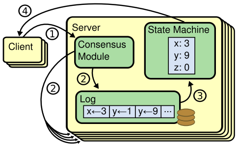

<!doctype html>


  


<html class="theme-next mist use-motion" lang="en">
<head>
  <meta charset="UTF-8"/>
<meta http-equiv="X-UA-Compatible" content="IE=edge" />
<meta name="viewport" content="width=device-width, initial-scale=1, maximum-scale=1"/>


<meta http-equiv="Cache-Control" content="no-transform" />
<meta http-equiv="Cache-Control" content="no-siteapp" />


  
  
  <link href="/lib/fancybox/source/jquery.fancybox.css?v=2.1.5" rel="stylesheet" type="text/css" />


  
  
  
  

  
    
    
  

  

  

  

  

  
    
    
    <link href="//fonts.googleapis.com/css?family=Lato:300,300italic,400,400italic,700,700italic&subset=latin,latin-ext" rel="stylesheet" type="text/css">
  


<link href="/lib/font-awesome/css/font-awesome.min.css?v=4.6.2" rel="stylesheet" type="text/css" />

<link href="/css/main.css?v=5.1.1" rel="stylesheet" type="text/css" />


  <meta name="keywords" content="Hexo, NexT" />


  <link rel="shortcut icon" type="image/x-icon" href="/favicon.ico?v=5.1.1" />


<meta property="og:type" content="website">
<meta property="og:title" content="Ralph's Blog">
<meta property="og:url" content="http://ralphbupt.github.io/index.html">
<meta property="og:site_name" content="Ralph's Blog">
<meta name="twitter:card" content="summary">
<meta name="twitter:title" content="Ralph's Blog">


<script type="text/javascript" id="hexo.configurations">
  var NexT = window.NexT || {};
  var CONFIG = {
    root: '/',
    scheme: 'Mist',
    sidebar: {"position":"left","display":"post","offset":12,"offset_float":0,"b2t":false,"scrollpercent":false},
    fancybox: true,
    motion: true,
    duoshuo: {
      userId: '0',
      author: 'Author'
    },
    algolia: {
      applicationID: '',
      apiKey: '',
      indexName: '',
      hits: {"per_page":10},
      labels: {"input_placeholder":"Search for Posts","hits_empty":"We didn't find any results for the search: ${query}","hits_stats":"${hits} results found in ${time} ms"}
    }
  };
</script>


  <link rel="canonical" href="http://ralphbupt.github.io/"/>


  <title>Ralph's Blog</title>
</head>

<body itemscope itemtype="http://schema.org/WebPage" lang="en">

  


<script>
  (function(i,s,o,g,r,a,m){i['GoogleAnalyticsObject']=r;i[r]=i[r]||function(){
            (i[r].q=i[r].q||[]).push(arguments)},i[r].l=1*new Date();a=s.createElement(o),
          m=s.getElementsByTagName(o)[0];a.async=1;a.src=g;m.parentNode.insertBefore(a,m)
  })(window,document,'script','https://www.google-analytics.com/analytics.js','ga');
  ga('create', 'UA-96545027-1', 'auto');
  ga('send', 'pageview');
</script>


  
  
    
  

  <div class="container sidebar-position-left 
   page-home 
 ">
    <div class="headband"></div>

    <header id="header" class="header" itemscope itemtype="http://schema.org/WPHeader">
      <div class="header-inner"><div class="site-brand-wrapper">
  <div class="site-meta ">
    

    <div class="custom-logo-site-title">
      <a href="/"  class="brand" rel="start">
        <span class="logo-line-before"><i></i></span>
        <span class="site-title">Ralph's Blog</span>
        <span class="logo-line-after"><i></i></span>
      </a>
    </div>
      
        <h1 class="site-subtitle" itemprop="description"></h1>
      
  </div>

  <div class="site-nav-toggle">
    <button>
      <span class="btn-bar"></span>
      <span class="btn-bar"></span>
      <span class="btn-bar"></span>
    </button>
  </div>
</div>

<nav class="site-nav">
  

  
    <ul id="menu" class="menu">
      
        
        <li class="menu-item menu-item-home">
          <a href="/" rel="section">
            
              <i class="menu-item-icon fa fa-fw fa-home"></i> <br />
            
            Home
          </a>
        </li>
      
        
        <li class="menu-item menu-item-archives">
          <a href="/archives" rel="section">
            
              <i class="menu-item-icon fa fa-fw fa-archive"></i> <br />
            
            Archives
          </a>
        </li>
      
        
        <li class="menu-item menu-item-tags">
          <a href="/tags" rel="section">
            
              <i class="menu-item-icon fa fa-fw fa-tags"></i> <br />
            
            Tags
          </a>
        </li>
      

      
    </ul>
  

  
</nav>


 </div>
    </header>

    <main id="main" class="main">
      <div class="main-inner">
        <div class="content-wrap">
          <div id="content" class="content">
            
  <section id="posts" class="posts-expand">
    
      

  

  
  
  

  <article class="post post-type-normal " itemscope itemtype="http://schema.org/Article">
    <link itemprop="mainEntityOfPage" href="http://ralphbupt.github.io/2018/08/12/写给自己的话/">

    <span hidden itemprop="author" itemscope itemtype="http://schema.org/Person">
      <meta itemprop="name" content="SleepyJimmy">
      <meta itemprop="description" content="">
      <meta itemprop="image" content="/img/wmm.jpg">
    </span>

    <span hidden itemprop="publisher" itemscope itemtype="http://schema.org/Organization">
      <meta itemprop="name" content="Ralph's Blog">
    </span>

    
      <header class="post-header">

        
        
          <h2 class="post-title" itemprop="name headline">
                
                <a class="post-title-link" href="/2018/08/12/写给自己的话/" itemprop="url">写给自己的话</a></h2>
        

        <div class="post-meta">
          <span class="post-time">
            
              <span class="post-meta-item-icon">
                <i class="fa fa-calendar-o"></i>
              </span>
              
                <span class="post-meta-item-text">Posted on</span>
              
              <time title="Post created" itemprop="dateCreated datePublished" datetime="2018-08-12T01:31:35+08:00">
                2018-08-12
              </time>
            

            

            
          </span>

          

          
            
              <span class="post-comments-count">
                <span class="post-meta-divider">|</span>
                <span class="post-meta-item-icon">
                  <i class="fa fa-comment-o"></i>
                </span>
                <a href="/2018/08/12/写给自己的话/#comments" itemprop="discussionUrl">
                  <span class="post-comments-count disqus-comment-count"
                        data-disqus-identifier="2018/08/12/写给自己的话/" itemprop="commentCount"></span>
                </a>
              </span>
            
          

          
          

          

          

          

        </div>
      </header>
    

    <div class="post-body" itemprop="articleBody">

      
      

      
        
          
            <p>打算写的技术 blog 很长一段时间没有更新了，很早之前也想写一篇文章来给自己做一个阶段性的总结，因为各种原因一直没有动笔。其实是自己没有勇气去剖析自己，然后一直用拖延来逃避现实罢了。</p>
<p>从 15年6月毕业开始， 现在已经毕业三年了，到北京已经7年了， 7 年宝贵的时光，被我给浪费了很多，大学里浑浑噩噩的四年，除了玩游戏给我留下深刻印象的事情不太多，入学的时候大家似乎都在同一起跑线上，四年过去后，差距已经拉开的非常大。 </p>
<p>现在回头想一想，自己从一开始就落后了，和优秀的同学们相比，自己差了一个明确目标，和高中生涯不同，那时候每天过的虽然很辛苦，但是有一个很明确的目标，只需要好好学习就行。到了大学之后，突然一下发现这个世界很大，对于一个从大山深处走出来的少年来说，很多事情都不是适应的那么轻松，出去吃饭发现一碗牛肉面要20多块钱还不能吃饱，同学们都自信满满充满了青春的活力，女同学们都打扮的漂漂亮亮的。网络的世界也很有趣，特别是一群人一起玩游戏的时候真的特别开心。很多时候一玩就不停不下来，然而每次玩完了后又有强烈的负罪感，差不多是一半的惶恐、一半的自我逃避。幸运的是周围的人都很好，带着我们玩的很开心，考试之前也会带着我一起去复习，因此很幸运的在大学还没有挂过科，不过70多分的平均分确确实实的反应了很多的问题。记得自己的成绩在学院内排名很靠后，不过当时总是在安慰自己说只要没挂科就万事大吉。</p>
<p>大一的时候，很多的同学都有了清晰的目标，知道自己以后要干什么，特别是出国的同学们，听说他们都是第一年都差不多有了很清晰的目标，学英语考托福雅思，刷 GPA 。当我在宿舍玩着游戏的时候，他们在教室里上自习，当我还在睡懒觉的时候他们已经起床背单词。在编程的课程上，自己差不多只是完成老师最基本的要求，然而 ACM 的同学们已经早早的报名了校赛，参加集训。大家忙着参加各种竞赛，不断的充实自己.大二暑假的时候，宿舍的X突然下决定要出国，H也在大三的时候，因为女朋友等各种原因决定要出国，于是他们都开启了早出晚归的生活。后来我才知道，他们那个时候才开始准备已经算特别晚了，要去顶尖的大学都是一入学就得开始准备，X暑假的时候，每天在家背8个小时的英语单词，换着是我我大概是坚持不下来的吧，还有H也是，他决定要出国之后，每天所背负的压力，也是我难以想象的，换着是我也许一早就放弃了。</p>
<p>等到了毕业时，他们的付出都被证明是值得的，X和H申请到了很好的学校，研究生毕业后分别去了 G 和 F，世界上最顶尖的公司，每天和世界上最聪明的一群人一起工作学习。在学校的论坛上飞跃逛的时候发现，还有的同学申请到了 CMU 等连做梦都不敢做的名校的 offer。其他的同学，有的因为平时的努力学习，最后保研去了很好的实验室，做 ACM 的也都取得了不错的成绩，而自己，这是三天打鱼两天晒网的跟着去考研，刚好遇到了大年，结果连本来很容易考上研的本校都没有考上。因为考研错过了秋招，只能在春天的四月份才开始来找工作，因为没有面试经验，没有拿得出手的成绩，算法题也没有刷过，找工作也是频频受挫，好不容易在四月份的尾巴找到了两三份工作。当然了，和传说中的高薪差了很多，勉强让我一个人在北京能在养活自己。 那时候，有一种体会，当初自己少吃的苦，生活迟早会让你吃回来的。</p>
<p>毕业后的第一年，第一份工作工作去了一家做云游戏的创业公司，去之前觉得做的东西是会改变世界的产品，当然现在回头看看，这种弱终端将计算放在云端的模式以后确实是大势所趋。但是，怎么说呢，对于当下复杂的网络环境以及昂贵的带宽成本来说还是有点太超前了，需要解决的问题实在太多太多，boss 是北大毕业的，给我的感觉是特别的聪明，有很多过人的地方，看事情的角度不一样。带我的导师人也很好，经验丰富，但是很多时候很忙，没有很多的时间来带我这一个什么都不懂的新人，很多时候需要自己一步一步的去踩那些很简单的坑。现在回头一看，觉得应届生最好还是去一家大的公司，有着完善的培养体系。当然，自己那时候还想一边工作一边准备考研再战一年，自己也没有把全部的精力放在工作上。 下班后或者周末就去清华、北大的教室去上自习，自己也终于是时隔多年的重新的努力了一把，有时候还是很辛苦，但是咬咬牙发现自己也能坚持下去。这一段时间，虽然辛苦，但是却很充实。到了来年的三月份，自己的这段时间的付出终于还是有了收获，拿到了研究生的录取通知书，在研究生开学前的七月，我还完成了一个大二时埋下的梦想，骑完了川藏线。当然，骑川藏线这件事并没有让我的灵魂得到净化，但是向我自己证明了一件事，我能完成一件自己都认为不可能完成的事，给了我很多鼓舞。</p>
<p>毕业之后的第二年，连自己都不清楚为什么，去学校读了三个月的书之后选择了退学，也许是因为自己选择考研是为了证明自己能考上研，也许是读研的时候发现自己的抑郁又犯了，甚至可能只是因为自己的神经衰弱在学校宿舍睡不着觉，总之就是那时侯状态很糟糕，于是任性了一把。当然，我以后也不会后悔，自己做的决定无论如何都要挺着胸膛走下去。人生的路有很多条，路本身也没有对错好坏，最关键的是在于走这条路的人是用一种怎样的心态来面对，记得在和学校的老师聊天的时候，她告诉我，不论我最终的决定是如何，只要不用逃避的心态去面对人生，人生都会越来愈好的。退学之后的我，又随意的找了一家小公司做后台，在这里技术上有了一定的成长，但是内心还是会一直觉得不安。 也因为工作终于不是那么忙，于是有了自己的时间，周末出去跑跑步，之后整个人精神了一些，心态也终于渐渐好转。这一年也开始写技术博客，这个过程让自己成长了很多，偶尔有人会评论一句都会让自己觉得很开心。还领养了一只猫，有了猫的陪伴之后，抑郁也好了很多，然而在这工作了一年不到，公司就因为经营不善倒闭了。</p>
<p>这一次找工作，因为自己有了一定的工作经验，加上自己写的博客，再借着学校的口碑，这次终于去面试了几家大公司，拿到了其中几家公司的offer。最终选择了一直青睐的公司B。到了公司 B 之后突然发现，自己似乎又回到了刚毕业的时候，很多时候自己什么都不会，有一种从头开始学的感觉，同事都是名校毕业，大家都很聪明，交流起来很省心，就是发现突然自己成了不靠谱的那一个。自己又像一个应届毕业生一样，从最简单的一步一步学起，刚开始的过程真的很痛苦，但是随着对业务的逐渐熟悉，自己也在慢慢的提升。在这里工作是一件很有挑战性的工作，有很大的用户量会带来高并发的压力，在具体开发功能之前要先做好设计，与不同团队的人进行沟通也有很多需要注意。总的来说，现在这里是我积累和成长的地方，过几年之后再回头来看这一段经历吧。</p>
<p>记得来 B 这里面试的时候，经理说我是一个悲观的人，其实想一想自己确实是，在学校的时候一直过的很焦虑，甚至封闭和压制自己，钻进牛角尖出不来。总是会拿自己不好的地方去与别人好的地方比。或许这是一个阶段性的过程，其实到了现在，原来在学校里纠结和痛苦的问题自然的消失了，或者说事情本身没有变，改变的是自己的心态，对世界和人生有了新的看法。有时候能从一个旁观者的角度，来看自己脑袋中的想法与情绪，在这个过程中逐渐学会与自己达成和解。只是有些遗憾时间一去不复返，大学时侯自由的时间没有好好的把握，没有向喜欢的女生好好的告白，没有出去走走。过去的遗憾有很多，但是我能做的只有尽量不要留下新的遗憾。珍惜现在的生活，珍惜每一天，在心底定下自己的目标并不断的为之努力，相信自己一定能实现。</p>

          
        
      
    </div>

    <div>
      
    </div>

    <div>
      
    </div>

    <div>
      
    </div>

    <footer class="post-footer">
      

      

      

      
      
        <div class="post-eof"></div>
      
    </footer>
  </article>


    
      

  

  
  
  

  <article class="post post-type-normal " itemscope itemtype="http://schema.org/Article">
    <link itemprop="mainEntityOfPage" href="http://ralphbupt.github.io/2018/04/08/初探-quic-协议篇/">

    <span hidden itemprop="author" itemscope itemtype="http://schema.org/Person">
      <meta itemprop="name" content="SleepyJimmy">
      <meta itemprop="description" content="">
      <meta itemprop="image" content="/img/wmm.jpg">
    </span>

    <span hidden itemprop="publisher" itemscope itemtype="http://schema.org/Organization">
      <meta itemprop="name" content="Ralph's Blog">
    </span>

    
      <header class="post-header">

        
        
          <h2 class="post-title" itemprop="name headline">
                
                <a class="post-title-link" href="/2018/04/08/初探-quic-协议篇/" itemprop="url">初探 quic 协议篇</a></h2>
        

        <div class="post-meta">
          <span class="post-time">
            
              <span class="post-meta-item-icon">
                <i class="fa fa-calendar-o"></i>
              </span>
              
                <span class="post-meta-item-text">Posted on</span>
              
              <time title="Post created" itemprop="dateCreated datePublished" datetime="2018-04-08T22:33:04+08:00">
                2018-04-08
              </time>
            

            

            
          </span>

          

          
            
              <span class="post-comments-count">
                <span class="post-meta-divider">|</span>
                <span class="post-meta-item-icon">
                  <i class="fa fa-comment-o"></i>
                </span>
                <a href="/2018/04/08/初探-quic-协议篇/#comments" itemprop="discussionUrl">
                  <span class="post-comments-count disqus-comment-count"
                        data-disqus-identifier="2018/04/08/初探-quic-协议篇/" itemprop="commentCount"></span>
                </a>
              </span>
            
          

          
          

          

          

          

        </div>
      </header>
    

    <div class="post-body" itemprop="articleBody">

      
      

      
        
          
            <p>最近开始研究 quic 协议，打算先整理和翻译了一下 quic 协议草案，虽然自己写完这篇文章之后发现网上已经有翻译的很好的版本， 如果有需要的话可以先看这个版本</p>
<h1 id="quic-协议分析"><a href="#quic-协议分析" class="headerlink" title="quic 协议分析"></a>quic 协议分析</h1><h2 id="介绍"><a href="#介绍" class="headerlink" title="介绍"></a>介绍</h2><p>quic quick UDP Internet Connection 是一种新的基于UDP的多路复用的安全传输协议，设计目的是对 http/2 语法的优化， 设计时HTTP/2 作为主要的应用层协议，quic 提供了等效 HTTP/2 的多路复用以及流控，等效于 TLS的安全传输，可靠。 以及 TCP 的 拥塞控制<br>quic 作用于用户空间,现在 chrome 已经内置了 quic 的支持， 因为 quic 是基于用户空间的基于UDP的传输层协议, quic 跟新时不会受到因为各种设备或则中间设备对于新的传输层协议不支持、或者升级缓慢的影响。</p>
<h2 id="概念与定义"><a href="#概念与定义" class="headerlink" title="概念与定义"></a>概念与定义</h2><p>quic 中年所有的整型， 包括长度、版本、类型 都是小端子节序，不是网络子节序。 quic 在动态大小的帧不强制实施字节对齐<br>接下来涉及到的一些术语有</p>
<ul>
<li>Client:</li>
<li>Server:</li>
<li>Endpoint: client or server end of a connection</li>
<li>Stream: 基于 QUIC connction 的逻辑上的双向字节流</li>
<li>Connection: 连个 QUIC EndPoint 之间的会话，</li>
<li>Connection ID: quic 连接的标志</li>
<li>QUIC Packet: 可以背quic 接收者解析的 UDP 包</li>
<li>Stream Frame<h2 id="quic-概览"><a href="#quic-概览" class="headerlink" title="quic 概览"></a>quic 概览</h2>quic 在功能上等同于 TCP + TLS + HTTP/2, 但是基于 UDP 之上。 QUIC 对比 TCP + TLS + HTTP/2 的优势有</li>
<li>连接建立的延迟</li>
<li>弹性拥塞控制</li>
<li>没有头部阻塞的多路复用</li>
<li>Header 以及 Payload 的认证与加密</li>
<li>stream 以及 connection的流控管理</li>
<li>前向纠错</li>
<li>连接迁移<h3 id="连接建立延迟"><a href="#连接建立延迟" class="headerlink" title="连接建立延迟"></a>连接建立延迟</h3>简单来说， quic 的握手通常只需要 0 个RTT，对比 TCP + TLS 的话通常需要1-3 个RTT<br>当一个 quic clent 首次连接到一个 server 的时候， client 必须执行 1 RTT的握手，这是为了获取到完成握手的必要信息。client 发送一个不完全的 hello（CHLO）。 server 发送一个 rejection（REJ）包，REJ 包中包含有 client 接下来所需要的信息。 其中包含一个源地址的token，这个token会在接下来的 CHLO 中用于验证 client 的IP。 REJ 包中叶包含了 server 端的证书，接下来client 端发送 CHLO 的时候，client 端可以用之前连接中缓存认证信息来立即发送加密的请求。<h3 id="弹性拥塞控制"><a href="#弹性拥塞控制" class="headerlink" title="弹性拥塞控制"></a>弹性拥塞控制</h3>quic 有可插拔的拥塞控制， 相比 TCP quic有更多的信号，因此可以给拥塞控制算法提供更多的信息， 同时 google 在实现 quic 的时候也重新实现了 TCP的拥塞控制， 同时也在实验其他的方案。<br>对于原始的数据包以及重传的包都携带一个新的序列号，这样发送方就能区分 ACK 是原始包的ACK或者是重传包的ACK。 QUIC 的ACK 包也携带了每一个帧的延迟信息，这样使得RTT计算更精确<h3 id="stream-和-connection-流控"><a href="#stream-和-connection-流控" class="headerlink" title="stream 和 connection 流控"></a>stream 和 connection 流控</h3>quic 提供了基于 stream 和基于 connection 的流控管理</li>
<li>quic 数据的收发过程中都在特定stream上进行。接收者发送一个WINDOW_UPDATE 帧来告知自己希望接受的数据偏移量。 允许同伴发送更多的数据</li>
<li>对于 connection 的流控管理和 stream 的类似，但是对于所有流的集合而言的。<h3 id="多路复用"><a href="#多路复用" class="headerlink" title="多路复用"></a>多路复用</h3></li>
<li>基于 TCP 的HTTP/2 会受到 TCP 的头部阻塞影响， 因为HTTP/2 的多路复用中的不同流是基于TCP的单个子节流，一个TCP数据报文的丢失会阻塞所有的数据报的传输，直到重传包的到来</li>
<li>因为quic是为了多路复用而设计的，所以当一个流的数据包丢失只会影响到特定的流，其他的流可以正常的传输数据</li>
<li>警告: quic 现在压缩头部是通过 HTTP/2 HPACK 头部压缩，将会对header 加强header帧的头部阻塞<h3 id="头部和负载的校验与加密"><a href="#头部和负载的校验与加密" class="headerlink" title="头部和负载的校验与加密"></a>头部和负载的校验与加密</h3>TCP 的头部是明文且咩有考验，导致头部注入以及头部操作等诸多问题， 其中一部分是主动的攻击，另一部分是中间设备试图提升TCP的性能儿做的。 这些给TCP的升级带来了组多问题<br>quic 的 packet 始终被加密过<h3 id="前向纠错"><a href="#前向纠错" class="headerlink" title="前向纠错"></a>前向纠错</h3>quic 现在使用简单的 XOR-based FEC 计划， 当一组packet中的一个 packet 丢失后， quic 可以根据 FEC 帧和组里的其他帧恢复出这组帧里的数据。<h3 id="连接迁移"><a href="#连接迁移" class="headerlink" title="连接迁移"></a>连接迁移</h3></li>
<li>一个TCP连接采用 4元组来标识每一个连接（clientIP:clientPort:serverIp:serverPort）， 所以当四元组的某一项发生改变的时候，（例如 client 从4G 切换到WIFI）， 那么TCP的连接就会断开</li>
<li>QUIC 的连接通过一个随机的64位 connectionID来标识每一个连接， 所以当IP地址改变或者NAT重新绑定的时候 Connection ID 保持不变，QUIC 也提供了连接迁移时候的自动加密验证。迁移后的连接使用同样的 session Key 来加密和解密数据帧</li>
</ul>
<h2 id="packet-类型与格式"><a href="#packet-类型与格式" class="headerlink" title="packet 类型与格式"></a>packet 类型与格式</h2><p>QUIC 有四种 packet 类型</p>
<ul>
<li>Version Negotiation Packets</li>
<li>Frame Packets</li>
<li>FEC Packets</li>
<li>Public Reset Packets<br>所有的 QUIC packet 大小都应该低于路径的 MTU， 路径 MTU 的发现由进程负责实现， QUIC 在IPv6 最大支持 1350 的packet ， IPv4<br>最大支持 1370<h3 id="QUIC普通帧头部"><a href="#QUIC普通帧头部" class="headerlink" title="QUIC普通帧头部"></a>QUIC普通帧头部</h3>所有的QUIC 帧都有一个 2-21 字节的头部， 头部的格式如下<figure class="highlight plain"><table><tr><td class="gutter"><pre><div class="line">1</div><div class="line">2</div><div class="line">3</div><div class="line">4</div><div class="line">5</div><div class="line">6</div><div class="line">7</div><div class="line">8</div><div class="line">9</div><div class="line">10</div><div class="line">11</div><div class="line">12</div><div class="line">13</div><div class="line">14</div><div class="line">15</div></pre></td><td class="code"><pre><div class="line">0 1 2 3 4 8</div><div class="line">+--------+--------+--------+--------+--------+--- ---+</div><div class="line">| Public | Connection ID (0, 8, 32, or 64) ... | -&gt;</div><div class="line">|Flags(8)| (variable length) |</div><div class="line">+--------+--------+--------+--------+--------+--- ---+</div><div class="line">9 10 11 12</div><div class="line">+--------+--------+--------+--------+</div><div class="line">| Quic Version (32) | -&gt;</div><div class="line">| (optional) |</div><div class="line">+--------+--------+--------+--------+</div><div class="line">13 14 15 16 17 18 19 20</div><div class="line">+--------+--------+--------+--------+--------+--------+--------+--------+</div><div class="line">| Sequence Number (8, 16, 32, or 48) |Private | FEC (8)|</div><div class="line">| (variable length) |Flags(8)| (opt) |</div><div class="line">+--------+--------+--------+--------+--------+--------+--------+--------+</div></pre></td></tr></table></figure>
</li>
</ul>
<p>从 Private Flags 开始的数据是加密过的</p>
<ul>
<li>Public Flags</li>
<li>0x01： packet 是否包含 Quic Version</li>
<li>0x02： packet 是否是 Public Reset Packets</li>
<li>0x0C 的两比特： Connection ID 长度</li>
<li>00 省略 conncetion ID</li>
<li>01 1 字节</li>
<li>10 4字节</li>
<li>11 8 字节</li>
<li>0x30 的两比特: Sequence Number 长度</li>
<li>00 1 字节</li>
<li>01 2 字节</li>
<li>10 4 字节</li>
<li><p>11 8 字节</p>
</li>
<li><p>Connection ID: client 端产生的一个64位无符号整型，标识唯一的连接， 可以和server 端协商 Connection ID 长度</p>
</li>
<li>QUIC Version: 32 位的版本号</li>
<li>Sequence Number: 版本号</li>
<li>Private Flags:</li>
<li>0x01</li>
<li>0x02</li>
<li>0x04 是否是FEC packet</li>
<li>FEC 8bit 的group number 偏移量，仅仅当Private Flags 中设置是 FEC packet 才有<h3 id="Version-Negotiation-Packets"><a href="#Version-Negotiation-Packets" class="headerlink" title="Version Negotiation Packets"></a>Version Negotiation Packets</h3>描述版本协商信息的 QUIC packet<h3 id="Frame-Packet"><a href="#Frame-Packet" class="headerlink" title="Frame Packet"></a>Frame Packet</h3>包含一系列的以类型为前缀的负载<figure class="highlight plain"><table><tr><td class="gutter"><pre><div class="line">1</div><div class="line">2</div><div class="line">3</div></pre></td><td class="code"><pre><div class="line">+--------+---...---+--------+---...---+</div><div class="line">| Type | Payload | Type | Payload |</div><div class="line">+--------+---...---+--------+---...---+</div></pre></td></tr></table></figure>
</li>
</ul>
<h3 id="FEC-Pakcet"><a href="#FEC-Pakcet" class="headerlink" title="FEC Pakcet"></a>FEC Pakcet</h3><p>一个 FEC 分组中的冗余数据信息<br><figure class="highlight plain"><table><tr><td class="gutter"><pre><div class="line">1</div><div class="line">2</div><div class="line">3</div></pre></td><td class="code"><pre><div class="line">+-----...----+</div><div class="line">| Redundancy |</div><div class="line">+-----...----+</div></pre></td></tr></table></figure></p>
<h3 id="Public-Reset-Packets"><a href="#Public-Reset-Packets" class="headerlink" title="Public Reset Packets"></a>Public Reset Packets</h3><figure class="highlight plain"><table><tr><td class="gutter"><pre><div class="line">1</div><div class="line">2</div><div class="line">3</div><div class="line">4</div><div class="line">5</div><div class="line">6</div><div class="line">7</div><div class="line">8</div><div class="line">9</div><div class="line">10</div></pre></td><td class="code"><pre><div class="line">0 1 2 3 4 8</div><div class="line">+--------+--------+--------+--------+--------+-- --+</div><div class="line">| Public | Connection ID (64) ... | -&gt;</div><div class="line">|Flags(8)| |</div><div class="line">+--------+--------+--------+--------+--------+-- --+</div><div class="line">9 10 11 12 13 14</div><div class="line">+--------+--------+--------+--------+--------+--------+---</div><div class="line">| Quic Tag (32) | Tag value map ... -&gt;</div><div class="line">| (PRST) | (variable length)</div><div class="line">+--------+--------+--------+--------+--------+--------+---</div></pre></td></tr></table></figure>
<h2 id="QUIC-connection-生命周期"><a href="#QUIC-connection-生命周期" class="headerlink" title="QUIC connection 生命周期"></a>QUIC connection 生命周期</h2><h3 id="connection-连接建立"><a href="#connection-连接建立" class="headerlink" title="connection 连接建立"></a>connection 连接建立</h3><p>client 端负责初始化建立连接， 建立连接包括 协商加密方式以及传输层的握手， 在建立连接的过程中， quic 会发送很多 Tags 来协商各种参数， 同时握手的数据被包含在 Frame Packets 中</p>
<h3 id="数据传输"><a href="#数据传输" class="headerlink" title="数据传输"></a>数据传输</h3><ul>
<li>quic 实现了可靠性、拥塞控制、流控。 QUIC 的流控和 HTTP／2 很相似， 一个 QUIC 的 连接采用单一的sequence number 空间</li>
<li>所有的数据传输都是在 stream 内的<h4 id="QUIC-stream-生命周期"><a href="#QUIC-stream-生命周期" class="headerlink" title="QUIC stream 生命周期"></a>QUIC stream 生命周期</h4></li>
<li>stream 是独立的双向字节流， 可以被客户端和服务端创建，可以并发的和其他stream 收发数据， quic stream 的生命周期和 HTTP/2 模型相似</li>
<li>stream 创建是隐式的，为了避免 stream-ID 碰撞， server 端创建的streamID 是偶数的， client 端的则是基数， 0 是无效的 streamID， streamID 1 被保留用作密钥握手，stream 3 被保留用于发送所有其他流的header。</li>
<li>每一端创建的streamID必须是单调递增的。</li>
<li>一旦一个stream 被创建，这个stream 可以用来收发数据 Frame ，直到该方向的stream被终止</li>
<li>client、server 都可以正常的关闭stream，有以下三种情况一个stream 会被终止</li>
<li>正常终止 因为stream 是双向的，当一方关闭stream 后， stream 就变成了半关闭的，（只能接收不能发送），当另一端也关闭之后， stream 则被认为是关闭了。</li>
<li>突然终止 client 和 server 可以发送 RST_STREAM frame ，这样接收方则认为可以关闭 stream</li>
<li>connection 被终止<h3 id="连接终止"><a href="#连接终止" class="headerlink" title="连接终止"></a>连接终止</h3>quic 在保持空闲到约定的时间之前都应该保持打开状态， 当 server 端决定终止一个空闲的连接的时候， server 端因该避免通知client端。 一个 connection 建立成功之后有以下两种方式被关闭</li>
<li>主动关闭 一个 endpoint 可以发送一个 CONNECTION_CLOSE 帧给同伴，说明开始关闭 connection， endpoint 也可以发送更高优先级的 GOAWAY 帧来表示连接将要被关闭。</li>
<li>被动关闭 一个 QUIC connection 的默认空闲超时是 30 s， 最大超时时长是 10 m，如果在 空闲超时的时间内没有网络活动，连接将会被关闭，一个默认的 CONNECTION_CLOSE 将会被发送</li>
</ul>
<h2 id="帧的数据类型"><a href="#帧的数据类型" class="headerlink" title="帧的数据类型"></a>帧的数据类型</h2><p>对于 frame 有两种解释，因此也有两种类型的帧</p>
<ul>
<li>特殊类型数据帧</li>
<li>普通数据帧 普通的字节数据<h3 id="特殊数据帧"><a href="#特殊数据帧" class="headerlink" title="特殊数据帧"></a>特殊数据帧</h3></li>
<li>STREAM 创建stream ， 在stream 上发送数据</li>
<li>ACK receiver 收到了哪些帧，哪些帧丢失了</li>
<li>CONGESTION_FEEDBACK</li>
<li>PADDING 填充数据</li>
<li>RST_STREAM 关闭一个stream</li>
<li>CONNECTION_CLOSE （实验性的frame，还没启用）</li>
<li>GOAWAY</li>
<li>WINDOW_UPDATE 告诉对端增加 流控的frame， 当其中的stream ID为0 的时候，是指对 connection, 大于0 时对于特定的 stream</li>
<li>BLOCKED 告诉对端现在流控的窗口被阻塞，不能接受数据</li>
<li>STOP_WAITING 告诉对端不要再等待低于特定序列号的 packet</li>
<li>PING</li>
</ul>
<h2 id="总结"><a href="#总结" class="headerlink" title="总结"></a>总结</h2><p>QUIC crypto 协议是 QUIC 的一部分， QUIC 加密协议可以提供安全的传输层连接。 QUIC crypto 设计时就将会被遗弃，将来会被 TLS 1.3 所代替， QUIC crypto 是在TLS1.3 之前的过度协议</p>
<p>基于现有的 QUIC crypto 协议，如果客户端缓存了 server 端的信息， 客户端可以在 0 个 RTT 内建立 加密的连接， TLS 则需要至少2RTT</p>
<h2 id="Source-address-spoofing"><a href="#Source-address-spoofing" class="headerlink" title="Source address spoofing"></a>Source address spoofing</h2><ul>
<li><p>互联网上的协议很少没有 RTT的， 大多数协议至少有一个RTT （TCP）, 2RTT（TLS).</p>
</li>
<li><p>通常这些RTT内都会交换信息，TCP中的序列号、TLS中的随机数。TCP 的随机值可以防止 IP地址欺骗， TLS 的随机数可以防止重播攻击。任何试图减少 RTT 的协议都会遇到这两个问题。</p>
</li>
<li>例如在DNS协议中， DNS 协议没有RTT，DNS 直接无视 源地址欺骗，因此Ddos 是一个问题，对于重播攻击，DNSSEC 依靠时钟同步和一个短时间的签名来实现</li>
<li>QUIC 通过给 client 发行一个 源地址token（source-address-token），token 对于client来说就是一段不透明的字节，对于server 端来说， token 是一段至少包含了 client IP 地址和server端的时间戳的经过加密和验证了的时间戳。</li>
<li>server 只会给目标IP发送其IP的token，client 则保留token视为自己拥有该IP</li>
<li>如果client端IP地址发生改变，token则被视为过期，如果client端没有token，sercer端会拒绝该连接，如果client 端没有改变IP地址，则可以重用该TOKEN</li>
<li>token的生命周期由server端负责管理。但是 client 端的token可以被盗取用来绕开基于IP地址的限制，（攻击者不会收到回应）， 在DHCP等环境下，如果client的IP地址发生了改变，TOKEN 仍然可以被使用。</li>
<li>在QUIC协议中，一旦一个连接建立 之后， QUIC 在数据报包中包含墒比特，用来要求接收端发送收到的墒比特的hash</li>
</ul>
<h2 id="重放保护"><a href="#重放保护" class="headerlink" title="重放保护"></a>重放保护</h2><ul>
<li>在 TLS 中， 每一端都会发送一个随机数用来保证对端是最新的，如果没有RTT， 客户端仍然可以发送随机数给 server，但是server则没有机会给client端发送随机数</li>
<li>在 如果没有server端的输入信息来提供重放保护的代价很昂贵，需要server 端保持状态一致。 如果server端只有一台的话代价还好，但是现在各种服务基本是是分布式的</li>
<li>QUIC 不能给在收到server端的第一次回复之前的数据提供重放保护，这个需要应用程序自己去决定相关的安全性， 例如在chrome中，只有 GET 请求可以在 握手认证之前发送数据</li>
</ul>
<h2 id="握手"><a href="#握手" class="headerlink" title="握手"></a>握手</h2><p>为了执行0-RTT的握手，client 需要有已经被验证的 server 配置。</p>
<ul>
<li><p>一开始 client 不知道server端的信息， 所以在握手开始之前， client 端将会发送一个 “不完全的” client Hello 消息去获得server端的配置以及server端的认证信息，这个过程可能持续好几个RTT 的  “不完全的” client hello 请求，因为在这个过程中server 也不愿意发送大量的认证信息给未验证的IP地址</p>
</li>
<li><p>Client hello 消息含有 CHLO tag 以及以下的各种 tag／value 数值</p>
</li>
<li>SNI Server Name Indication (optional) RFC 5890 , 不能是 IP 地址</li>
<li>STK Source-address token (optional) server 给的token</li>
<li>PDMD Proof demand: 现在只有 x509</li>
<li>CCS  Common certificate sets (optional): 客户端证书hash</li>
<li>CCRT Cached certificates (optional):  客户端缓存的server证书hash‘</li>
<li>VER 客户端quic 版本</li>
<li>XLCT 客户端期望server使用的叶结点证书的hash</li>
<li>不同版本的协议有不同的tag， 比如最大流的数量等</li>
<li>作为 CHLO 的回应， server 将会发送 SHLO 或者 rejection。 SHLO 意味着握手已经成功， rejection 包含了 client 端去构造一个完整的握手请求所需要的信息</li>
<li>rejection  有 REJ 标签， 同时还有以下的tag／value 数据</li>
<li>SCFG server config (optional):</li>
<li>STK Source-address token (optional)</li>
<li>SNO Server nonce (optional)</li>
<li>STTL server config 的有效期</li>
<li>ff545243 Certificate chain (optional)</li>
<li>PROF  Proof of authenticity (optional)</li>
<li>SCFG 中包含了加密算法等其他信息</li>
<li>一旦client 端收到了server config， 并且已经被验证了之后，client 端可以构造一个不会失败的 CHLO 请求， 同时这个完整的请求比之前的 CHLO 多了一些 SCFG 中的 TAG, 比如加密所用的公钥等</li>
<li>一旦 client 端发送了完整的 CHLO 请求之后，client 接受请求和发送信息都要使用加密。</li>
<li>这时候client 可以自由的给server 发送数据而不用等待回复</li>
<li>握手成功之后， server 将会返回一个 SHLO 信息， 而且是加密过的</li>
</ul>

          
        
      
    </div>

    <div>
      
    </div>

    <div>
      
    </div>

    <div>
      
    </div>

    <footer class="post-footer">
      

      

      

      
      
        <div class="post-eof"></div>
      
    </footer>
  </article>


    
      

  

  
  
  

  <article class="post post-type-normal " itemscope itemtype="http://schema.org/Article">
    <link itemprop="mainEntityOfPage" href="http://ralphbupt.github.io/2018/02/15/程序core与hang/">

    <span hidden itemprop="author" itemscope itemtype="http://schema.org/Person">
      <meta itemprop="name" content="SleepyJimmy">
      <meta itemprop="description" content="">
      <meta itemprop="image" content="/img/wmm.jpg">
    </span>

    <span hidden itemprop="publisher" itemscope itemtype="http://schema.org/Organization">
      <meta itemprop="name" content="Ralph's Blog">
    </span>

    
      <header class="post-header">

        
        
          <h2 class="post-title" itemprop="name headline">
                
                <a class="post-title-link" href="/2018/02/15/程序core与hang/" itemprop="url">程序core</a></h2>
        

        <div class="post-meta">
          <span class="post-time">
            
              <span class="post-meta-item-icon">
                <i class="fa fa-calendar-o"></i>
              </span>
              
                <span class="post-meta-item-text">Posted on</span>
              
              <time title="Post created" itemprop="dateCreated datePublished" datetime="2018-02-15T00:55:43+08:00">
                2018-02-15
              </time>
            

            

            
          </span>

          

          
            
              <span class="post-comments-count">
                <span class="post-meta-divider">|</span>
                <span class="post-meta-item-icon">
                  <i class="fa fa-comment-o"></i>
                </span>
                <a href="/2018/02/15/程序core与hang/#comments" itemprop="discussionUrl">
                  <span class="post-comments-count disqus-comment-count"
                        data-disqus-identifier="2018/02/15/程序core与hang/" itemprop="commentCount"></span>
                </a>
              </span>
            
          

          
          

          

          

          

        </div>
      </header>
    

    <div class="post-body" itemprop="articleBody">

      
      

      
        
          
            <h1 id="core"><a href="#core" class="headerlink" title="core"></a>core</h1><h2 id="什么是-core"><a href="#什么是-core" class="headerlink" title="什么是 core"></a>什么是 core</h2><p>core dump memory dump system dump 包含了程序在特定时候的内存状态，通常是程序 crash 或者因为其他愿意意外终止。实际上，程序状态的其他信息通常也同时被记录了下来，包括处理器寄存器（PC 和堆栈信息） ,<br>内存管理信息，其他处理器信息以及系统flag。 core dump 通常被用来帮组诊断和调试程序错误</p>
<h2 id="core-文件所在位置"><a href="#core-文件所在位置" class="headerlink" title="core 文件所在位置"></a>core 文件所在位置</h2><p>/proc/sys/kernel/core_pattern 指定了程序发生core时保存的coredump 文件路径以及命名方式<br>/proc/sys/kernel/core_use_pid 控制文件名末尾是否加上pid作为扩展</p>
<p>产生 core 文件的时候，需要设置系统的core文件大小， ulimit -c unlimited  不限制core文件大小,ulimit -c 0 可以阻止系统生成core文件</p>
<h2 id="core-文件调试"><a href="#core-文件调试" class="headerlink" title="core 文件调试"></a>core 文件调试</h2><p>gdb + 程序名 + corefile</p>
<p>可以看见程序在哪一个函数挂掉</p>
<p>如果在编译的时候加上 -g 参数， 可以看见程序在哪一行挂掉</p>
<p>注意事项： core 文件必需是对应的可执行文件产生的，否则符号表会对应不上</p>
<h2 id="core-调试实例"><a href="#core-调试实例" class="headerlink" title="core 调试实例"></a>core 调试实例</h2><figure class="highlight plain"><table><tr><td class="gutter"><pre><div class="line">1</div><div class="line">2</div><div class="line">3</div><div class="line">4</div><div class="line">5</div><div class="line">6</div><div class="line">7</div><div class="line">8</div><div class="line">9</div><div class="line">10</div><div class="line">11</div><div class="line">12</div><div class="line">13</div><div class="line">14</div><div class="line">15</div><div class="line">16</div><div class="line">17</div><div class="line">18</div><div class="line">19</div><div class="line">20</div><div class="line">21</div><div class="line">22</div><div class="line">23</div><div class="line">24</div></pre></td><td class="code"><pre><div class="line">void do_it();</div><div class="line"></div><div class="line">int main()&#123;</div><div class="line">    do_it();</div><div class="line">    return 0;</div><div class="line">&#125;</div><div class="line">void do_it()&#123;</div><div class="line">    char *p = 1;</div><div class="line">    *p = &apos;a&apos;;</div><div class="line">&#125;</div><div class="line"></div><div class="line">gcc -g test.c</div><div class="line"></div><div class="line">./a.out  可见生成 core.&#123;pid&#125; 文件 </div><div class="line"></div><div class="line">然后 gdb a.out core.&#123;pid&#125;</div><div class="line"></div><div class="line">Core was generated by `./a.out&apos;.</div><div class="line">Program terminated with signal SIGSEGV, Segmentation fault.</div><div class="line">#0  0x00000000004005a5 in do_it () at test.c:9</div><div class="line">9	    *p = &apos;a&apos;;</div><div class="line">(gdb) bt</div><div class="line">#0  0x00000000004005a5 in do_it () at test.c:9</div><div class="line">#1  0x000000000040058e in main () at test.c:4</div></pre></td></tr></table></figure>
<p>上述是网上很多人都在使用的例子，但是也给我们展示了几本的用用法，core dump 因为保存了整个内存的快照，所以其实我们能够获取到更多的信息，但是在此处就先不展开，用 gdb 应该能更方便的获取到跟多的信息</p>

          
        
      
    </div>

    <div>
      
    </div>

    <div>
      
    </div>

    <div>
      
    </div>

    <footer class="post-footer">
      

      

      

      
      
        <div class="post-eof"></div>
      
    </footer>
  </article>


    
      

  

  
  
  

  <article class="post post-type-normal " itemscope itemtype="http://schema.org/Article">
    <link itemprop="mainEntityOfPage" href="http://ralphbupt.github.io/2017/11/30/raft算法/">

    <span hidden itemprop="author" itemscope itemtype="http://schema.org/Person">
      <meta itemprop="name" content="SleepyJimmy">
      <meta itemprop="description" content="">
      <meta itemprop="image" content="/img/wmm.jpg">
    </span>

    <span hidden itemprop="publisher" itemscope itemtype="http://schema.org/Organization">
      <meta itemprop="name" content="Ralph's Blog">
    </span>

    
      <header class="post-header">

        
        
          <h2 class="post-title" itemprop="name headline">
                
                <a class="post-title-link" href="/2017/11/30/raft算法/" itemprop="url">raft算法</a></h2>
        

        <div class="post-meta">
          <span class="post-time">
            
              <span class="post-meta-item-icon">
                <i class="fa fa-calendar-o"></i>
              </span>
              
                <span class="post-meta-item-text">Posted on</span>
              
              <time title="Post created" itemprop="dateCreated datePublished" datetime="2017-11-30T14:48:26+08:00">
                2017-11-30
              </time>
            

            

            
          </span>

          

          
            
              <span class="post-comments-count">
                <span class="post-meta-divider">|</span>
                <span class="post-meta-item-icon">
                  <i class="fa fa-comment-o"></i>
                </span>
                <a href="/2017/11/30/raft算法/#comments" itemprop="discussionUrl">
                  <span class="post-comments-count disqus-comment-count"
                        data-disqus-identifier="2017/11/30/raft算法/" itemprop="commentCount"></span>
                </a>
              </span>
            
          

          
          

          

          

          

        </div>
      </header>
    

    <div class="post-body" itemprop="articleBody">

      
      

      
        
          
            <h1 id="raft-一致性算法（论文总结）"><a href="#raft-一致性算法（论文总结）" class="headerlink" title="raft 一致性算法（论文总结）"></a>raft 一致性算法（论文总结）</h1><h3 id="CAP-定理"><a href="#CAP-定理" class="headerlink" title="CAP 定理"></a>CAP 定理</h3><ul>
<li>Consistency(一致性)： 数据一致更新，所有数据变动都是同步的</li>
<li>Availability(可用性)： 好的响应性能</li>
<li>Network partitioning(分区容错性)： 可靠性（当发生了分区的情况下，必须要在 C 和 A 之间做出选择）</li>
</ul>
<p>根据定理，分布式系统只能满足三项中的两项而不可能满足全部三项[4]。理解CAP理论的最简单方式是想象两个节点分处分区两侧。允许至少一个节点更新状态会导致数据不一致，即丧失了C性质。如果为了保证数据一致性，将分区一侧的节点设置为不可用，那么又丧失了A性质。除非两个节点可以互相通信，才能既保证C又保证A，这又会导致丧失P性质。</p>
<p>对于一致性算法，一致性通常分为 三个级别 强一致性、弱一致性、最终一致性。 raft 算法是一种强一致性算法</p>
<h3 id="raft-的新特性"><a href="#raft-的新特性" class="headerlink" title="raft 的新特性"></a>raft 的新特性</h3><p>Raft 和现有的一些一致性算法相似，但是它有一些新的特性</p>
<ul>
<li>Strong leader: raft 和其他一致性算法相比， 采用了一种更强力的领导策略。 比如， 日志条目只允许从领导到服务器。 这样简化了对于重复日志的管理，并让 raft 更加容易理解。</li>
<li>Leader election:  raft 采用随机定时器来选举领导。 这样只需要在心跳中加入少量的随机策略，就能简单迅速的解决冲突问题</li>
<li>Membership changes:: raft 在调整聚群成员的时候采用了一种联合一致性（ joint consensus）的机制。这样当配置改变的时候，集群可以继续运行</li>
</ul>
<h3 id="复制状态机（Replicated-State-Machine）"><a href="#复制状态机（Replicated-State-Machine）" class="headerlink" title="复制状态机（Replicated State Machine）"></a>复制状态机（Replicated State Machine）</h3><p>一致性算法是在复制状态机的背景中被提出来的。指的是在一组服务器中产生同样状态的副本，因此即使一些机器发生故障之后仍然能正常工作。复制状态机被用于解决分布式系统中的容错处理。zookeeper 中就使用了复制状态机。</p>
<p></p>
<p>复制状态机是通过复制日志来实现的。每一台服务器保存着一份日志，日志中包含一系列的命令，状态机会按顺序执行这些命令。因为每一台计算机的状态机都是确定的，所以每个状态机的状态都是相同的，执行的命令是相同的，最后的执行结果也就是一样的了。如何保证复制日志的一致就是一致性算法的工作内容。</p>
<p>通常强况下，一致性算法有以下特性</p>
<ul>
<li>确保安全性（从来不会返回错误的结果）在所有的非拜占庭问题的条件下，包括网络延迟、分区、丢包、乱序等情况</li>
<li>可用性 只要集群中大多数节点能够彼此通信，也能喝客户端保持通信、</li>
<li>不依赖定时去确保日志的一致性</li>
<li>通常情况下，只要集群中大多数节点对一轮 RPC 调用做出了相应，一条命令即可被视为已经完成。集群中少部分慢的节点不会影响整个系统的性能。</li>
</ul>
<h3 id="传统-Paxos-算法的缺点"><a href="#传统-Paxos-算法的缺点" class="headerlink" title="传统 Paxos 算法的缺点"></a>传统 Paxos 算法的缺点</h3><ul>
<li>Paxos 算法理解起来很困难</li>
<li>并不能很好的解决实际问题</li>
<li>工程中实现起来也很麻烦</li>
</ul>
<h3 id="raft-设计目标"><a href="#raft-设计目标" class="headerlink" title="raft 设计目标"></a>raft 设计目标</h3><ul>
<li>提供一个完整的、实际的基础用于系统构建，这样能显著的减少开发量</li>
<li>在所有情况下必须安全， 在典型的情况下保证可用性</li>
<li>最重要的是容易理解</li>
</ul>
<h2 id="Raft-算法"><a href="#Raft-算法" class="headerlink" title="Raft 算法"></a>Raft 算法</h2><p>Raft 实现一致性靠的是首先先选举一个 Leader，然后 Leader 全权负责复制日志(replicated log).<br>Leader 从客户端接受日志条目， 将它们复制到其他服务器，然后告诉服务器什么时候可以将日志条目应用到它的状态机中。 有一个 Leader 简化了复制日志的管理过程， 如果Leader 宕机或者和其他服务器失去了联系，则会选出一个新的 Leader 。</p>
<p>Raft 将一致性问题分解成相对独立的三个子问题</p>
<ul>
<li>Leader election (Leader 选举): 当集训中一个 Leader 宕机之后必须选出一个新的 Leader </li>
<li>Log replication (日志复制): leader 必须从客户端获取日志条目，并将其在集群中复制，强制其他日志和它的日志同步</li>
<li>Safety: 如果任何服务器将一条特定的日志条目应用到了自己的状态机中，其他服务器不能在相同的索引位置应用不同的条目。</li>
</ul>
<h3 id="raft-基础"><a href="#raft-基础" class="headerlink" title="raft 基础"></a>raft 基础</h3><p>一个 Raft 集群包含很多服务器节点， 5 是一个典型的数量，允许两个节点宕机。在任意的时候，每一台服务器节点属于以下三个状态中的一个。 Leader、follower、candidate。 正常情况下集群中有一个 leader、其他的节点全是 follower 。 follower 是被动的，不会处理任何请求，仅仅响应从 leader 和 candidates 的请求， leader 处理所有客户端的请求。 candidate 是在参与选举中的节点。<br></p>
<h3 id="raft-任期"><a href="#raft-任期" class="headerlink" title="raft 任期"></a>raft 任期</h3><p></p>
<p>raft 将时间分成任意长度的任期， 用连续的数字表示。 每一个任期都从一次选举开始，如果一个参与者赢得本次选举，那么在这次任期接下来的时间就作为集群的 Leader， 并负责管理这个集群。如果一次选举失败的情况下， 马上回开始另一轮选举， raft 保证了在灭一个任期内至少有一个 leader。</p>
<p>任期在 raft 算法中被视为逻辑时钟，允许服务器检测过期的信息如失效的 leader 等。 每一个服务器节点都存放了当前的任期号码，任期号码随着时间单调递增。服务器之间通信时回交换当前的任期号码。</p>
<p>如果一个节点的任期号比另一台服务器任期号小，它将立即更新自己的任期号。 如果一个 candidate 或者 leader 发现自己的任期过期，那么它会马上转变为 follower 状态，如果一台服务节点收到了一个过期的请求，它将拒绝该请求。</p>
<h3 id="raft-RPC"><a href="#raft-RPC" class="headerlink" title="raft RPC"></a>raft RPC</h3><p>Raft 服务节点之间采用 RPC 调用， 通常的一致性算法只需要两种类型的 RPC 。 在集群选举的时候 candidate 触发 RequestVote RPCs，Leader 触发 AppendEntries RPC。raft 添加了在节点之间传输快照的 RPC。 如果服务节点没收到 RPC 的响应，会自动的重试。为了提升性能，这些 RPC 并发的被调用。</p>
<ul>
<li>RequestVote RPCs</li>
<li>AppendEntries RPCs</li>
<li>Snapshot RPCs</li>
</ul>
<h3 id="Leader-election"><a href="#Leader-election" class="headerlink" title="Leader election"></a>Leader election</h3><p>raft 采用心跳的机制来出发 leader 选举。 </p>
<ul>
<li>当服务节点启动时，先作为一个 follower。 </li>
<li>如果一台服务只要能收到从 leader 或者 candidate 的 RPC 请求， 则该台服务器保持 follower 状态。</li>
<li>leader 周期性的发送心跳到所有的 follower 以保证其权威</li>
<li>follower 在一个周期内没收到通信请求叫做 election timeout，它假定没有可以到达的 leader。开始一轮选举， follower 增加自己的任期号码，将自己转变为 candidate 状态。</li>
<li>follower 为自己投一票并且并发的向集群中其他节点发起一个 RequestVote RPC 请求</li>
<li>candidate 在以下三种情况下会变成其他状态<ul>
<li>赢得本轮选举变为 leader</li>
<li>另外一台服务器节点成为了 leader</li>
<li>一个竞选周期结束之后没有选出 leader</li>
</ul>
</li>
<li>一个 candidate 如果在一个任期内赢得了整个集群中大多数节点的选票，就赢得了本次选举</li>
<li>在一轮选举中，每一台服务节点最多只会投一票（因此一轮选举最多选出一个 leader）</li>
<li><p>一旦一个节点赢得选举，自己变成 leader 状态， 并向其他节点发送心跳去建立自己的权威来阻止新的选举</p>
</li>
<li><p>candidate 在等待选票的时候，如果收到 其他声称自己时 leader A 节点的 AppendEntries RPC请求时</p>
<ul>
<li>如果收到 A 的 AppendEntries 的任期号码大于或等于自己的任期号码， 那么它会承认 A 的合法性， 并将自己转化 follower 状态</li>
<li>如果 A 的任期号比自己小， candidate 拒绝这次 RPC 调用并继续返回自己的选举</li>
</ul>
</li>
<li><p>如果多个 follower 同时变成了 candidate， 选票将会被多个 candidate 分享，这样可能没有一个 candidate 获得大多数的选票， 所有的 candidate 都会增加自己的任期，并开始下一轮选举。如果不采取额外措施，这种情况可能一致持续下去</p>
</li>
<li>Raft 采用随机的选举超时来确保分票这种情况很少发生，而且即使出现了也能快速被解决。</li>
</ul>
<h3 id="log-replication"><a href="#log-replication" class="headerlink" title="log replication"></a>log replication</h3><p>一旦 leader 被选了出来，就开始响应客户端的请求。 每一条客户端的请求都包含一条需要被复制状态机执行的命令。</p>
<ul>
<li>leader 接收客户端请求</li>
<li>leader 将命令作为一个日志条目加到它的日志中去</li>
<li>leader 并发的向其他节点发出  AppendEntries RPCs 请求</li>
<li>当条目被安全的复制（）之后，leader 将条目添加到状态机中， 并向客户端返回结果</li>
</ul>
<p>如果 follower 崩溃或者运行的很慢、或者发生了丢包， leader 不停的向 follower 发送AppendEntries RPC， 直到所有的 follower 存储了所有的  AppendEntries。</p>
<ul>
<li>每一个日志条目都有一个整数索引标记自己在日志中的位置</li>
<li>leader 决定什么时候可以安全的将 log 应用到状态机中 ， 这样的 日志条目被称为 提交的日志条目</li>
<li>Raft 确保了提交的日志条目是持久化的并且最终将会被所有可用的状态己执行。</li>
<li>一旦创建的日志条目的 leader 收到了集群中的大多数节点的确认时，该条日志条目就变成了已提交</li>
<li>在设计 Raft 的日志机制的时候，除了简化系统的行为和让其变的可预测之外，也是确保安全性中的一个很重要的组建。 Raft 维持了以下两种特性<ul>
<li>如果不同日志中的两个日志条目有相同的索引和任期，那么它们存储了相同的命令</li>
<li>如果不同日志中的两个日志条目有相同的任期和索引，那么值钱的日志是相同的<br>、<h1 id="参考文档"><a href="#参考文档" class="headerlink" title="参考文档"></a>参考文档</h1></li>
</ul>
</li>
<li><p><a href="https://en.wikipedia.org/wiki/CAP_theorem" target="_blank" rel="external">https://en.wikipedia.org/wiki/CAP_theorem</a></p>
</li>
<li><p><a href="https://raft.github.io/raft.pdf" target="_blank" rel="external">https://raft.github.io/raft.pdf</a></p>
</li>
<li><p><a href="https://github.com/maemual/raft-zh_cn/blob/master/raft-zh_cn.md" target="_blank" rel="external">https://github.com/maemual/raft-zh_cn/blob/master/raft-zh_cn.md</a></p>
</li>
</ul>

          
        
      
    </div>

    <div>
      
    </div>

    <div>
      
    </div>

    <div>
      
    </div>

    <footer class="post-footer">
      

      

      

      
      
        <div class="post-eof"></div>
      
    </footer>
  </article>


    
      

  

  
  
  

  <article class="post post-type-normal " itemscope itemtype="http://schema.org/Article">
    <link itemprop="mainEntityOfPage" href="http://ralphbupt.github.io/2017/11/27/etcd学习笔记/">

    <span hidden itemprop="author" itemscope itemtype="http://schema.org/Person">
      <meta itemprop="name" content="SleepyJimmy">
      <meta itemprop="description" content="">
      <meta itemprop="image" content="/img/wmm.jpg">
    </span>

    <span hidden itemprop="publisher" itemscope itemtype="http://schema.org/Organization">
      <meta itemprop="name" content="Ralph's Blog">
    </span>

    
      <header class="post-header">

        
        
          <h2 class="post-title" itemprop="name headline">
                
                <a class="post-title-link" href="/2017/11/27/etcd学习笔记/" itemprop="url">etcd学习笔记（etcdv3， gRPC服务发现和负载均衡）</a></h2>
        

        <div class="post-meta">
          <span class="post-time">
            
              <span class="post-meta-item-icon">
                <i class="fa fa-calendar-o"></i>
              </span>
              
                <span class="post-meta-item-text">Posted on</span>
              
              <time title="Post created" itemprop="dateCreated datePublished" datetime="2017-11-27T11:33:24+08:00">
                2017-11-27
              </time>
            

            

            
          </span>

          

          
            
              <span class="post-comments-count">
                <span class="post-meta-divider">|</span>
                <span class="post-meta-item-icon">
                  <i class="fa fa-comment-o"></i>
                </span>
                <a href="/2017/11/27/etcd学习笔记/#comments" itemprop="discussionUrl">
                  <span class="post-comments-count disqus-comment-count"
                        data-disqus-identifier="2017/11/27/etcd学习笔记/" itemprop="commentCount"></span>
                </a>
              </span>
            
          

          
          

          

          

          

        </div>
      </header>
    

    <div class="post-body" itemprop="articleBody">

      
      

      
        
          
            <p>etcd 和 grpc 负载均衡学习笔记</p>
<h1 id="etcd"><a href="#etcd" class="headerlink" title="etcd"></a>etcd</h1><p>etcd 是一个 分布式的 key-value 数据库</p>
<h2 id="数据模型"><a href="#数据模型" class="headerlink" title="数据模型"></a>数据模型</h2><p>etcd 设计时主要考虑两个目标</p>
<ul>
<li>可靠的存储<strong>不频繁</strong>更新的数据</li>
<li>提供可靠的监控查询 （监控键值对的变化）</li>
</ul>
<p>为了提供轻量级的快照和监控键值对的历史记录， etcd 暴露键值对的历史版本。一个持久化、多版本、分布式的数据模型适合这些案例</p>
<p>etcd 存储了一个多版本持久化的 store 中存取数据，每一次对 key 的修改不会替换原来的值，而是生成一个新的结构，所有过去的版本的数值在这次修改后仍然可以被获取并且监听。为了防止这个 store 随着时间越来越大要存储的数据越来越大，store 会将老版本的数据被压缩到一个叫 shed 的地方。</p>
<h3 id="逻辑视图"><a href="#逻辑视图" class="headerlink" title="逻辑视图"></a>逻辑视图</h3><p>store 的逻辑视图是一个扁平的二进制 键空间，键空间根据字符做了排序，因此查询的消耗很低</p>
<p>键空间的维护开很多版本，每一次对对这个键值的原子修改操作都在健空间生成一份新的修订，所有之前版本修订都保持不变。所有旧的版本数据仍然可以被获取到，但是当 store 被压缩到 shed 中的时候， 修订将会被移除。</p>
<p>一个 key 的生命周期一直有一个 generation， 如果新建一个之前不存在的 key ， 那么这个 key 的generation 是 1， 每一次对这个 key 的修改都会将 增加这个 key 的 generation。 删除一个 key 将产生一个 key 的墓碑， 一旦压缩发生后，所有在压缩之前发生的修订都会被删除。</p>
<h3 id="物理视图"><a href="#物理视图" class="headerlink" title="物理视图"></a>物理视图</h3><p>etcd 将物理数据存储在 b+树中， 每一次修订只包括了这次和上一次修订的变化。 每次修定对应树中的多个 key。</p>
<p>键值对的 key 是一个三元组 （major， sub, type ）。 其中 major 对应每一次修订， sub 区分修订中的不同key。 type 是一些特殊值的前缀，value 记录了和上一次修订的差值。 压缩则移除过期的键值对</p>
<p>etcd 在内存中也建立了一份 b树索引， 这样能够让对key 的查询变得高效。 b数 的key 就是 store 暴露给用户的 key</p>
<h2 id="硬件推荐"><a href="#硬件推荐" class="headerlink" title="硬件推荐"></a>硬件推荐</h2><ul>
<li>cpu 需求比较低，通常两到四核就够用了，如果负载很高，可以考虑用 8或16核的机器</li>
<li>内存 内存消耗也不高，8G基本已经够用</li>
<li>磁盘 磁盘对于 etcd 的性能和稳定性至关重要，首先是写入延迟对于 etcd 的性能影响很大。一般情况下硬盘的带宽能满足我们的需求， 如果可以，最好使用 固态硬盘， 不论对于固态硬盘还是机械硬盘， RAID 0 都能提升效率。对于至少三个节点的机器来说，复制和备份都不太重要。 etcd 本身就能保证高可用性</li>
<li>对于多节点的 etcd 来说， 低延迟的网络能够提升写入速率， 高带宽的网络可以减少故障恢复的时间，因此最好将 etcd 集群部署在一个数据中心，内网带宽越高越好</li>
</ul>
<h2 id="etcd-网关"><a href="#etcd-网关" class="headerlink" title="etcd 网关"></a>etcd 网关</h2><h3 id="什么是-etcd-网关"><a href="#什么是-etcd-网关" class="headerlink" title="什么是 etcd 网关"></a>什么是 etcd 网关</h3><p>etcd 网关是一个简单的 TCP 代理， 网关是无状态和透明的，既不会检查客户端的请求也不会修改集群的响应。 网关支持远端多个 etcd 节点， 可以用简单的 轮询方式依次访问每一个节点，如果某个节点出错了， 网关可以对客户端隐藏失败细节。 以后可能会支持概率轮询等其他方式。</p>
<h3 id="什么时候应该使用-etcd-网关模式"><a href="#什么时候应该使用-etcd-网关模式" class="headerlink" title="什么时候应该使用 etcd 网关模式"></a>什么时候应该使用 etcd 网关模式</h3><p>当一台机器上有多个应用程序都需要使用 etcd 的时候，每一个程序都需要知道 etcd 的地址， 如果 etcd 的地址修改了，那么每一个应用都需要修改 etcd 的地址。 如果在该机器上部署一个 etcd 网关节点，当 etcd 远端地址修改的时候，只用修改每一台机器上的 etcd 远端地址就行了。</p>
<h3 id="什么时候不应该使用网关模式"><a href="#什么时候不应该使用网关模式" class="headerlink" title="什么时候不应该使用网关模式"></a>什么时候不应该使用网关模式</h3><ul>
<li>追求性能 网关模式并没有为了考虑提升性能而设计。 不提供缓存，合并，和批处理等操作。 将来可能会开发带缓存的代理网关。</li>
<li>运行一个集群管理系统的时候 高级的集群管理系统 如k8s 等原生支持服务发现功能， 应用可以通过 系统管理的 DNS 或者虚拟 IP 来访问 etcd 节点。</li>
</ul>
<h1 id="grpc-负载均衡与服务发现"><a href="#grpc-负载均衡与服务发现" class="headerlink" title="grpc 负载均衡与服务发现"></a>grpc 负载均衡与服务发现</h1><p>为了构建高可用，高性能的后段服务，通常采用负载均衡、服务发现、容错处理等机制。通常有以下三种负载均衡方式</p>
<h2 id="代理模式-（Proxy-Model）"><a href="#代理模式-（Proxy-Model）" class="headerlink" title="代理模式 （Proxy Model）"></a>代理模式 （Proxy Model）</h2><p>通常使用一个独立的客户端来代理所有的请求，通常采用专门的硬件或者 HAproxy 等软件来实现。客户端不直接请求服务端，而是向代理发送请求，代理再将所有的请求按照某种策略如轮询等方式发送给服务端并将服务端的结果返回给客户端。 代理模式通常具备健康检查能力，可以移除故障的服务端实例。缺点在于：</p>
<ul>
<li>代理模式需要额外的资源，因为它需要复制请求和响应。</li>
<li>在客户端和服务端之间增加了一级，有一定的性能损耗并且会增加延迟。</li>
</ul>
<h2 id="进程内负载均衡（Balancing-aware-Client）"><a href="#进程内负载均衡（Balancing-aware-Client）" class="headerlink" title="进程内负载均衡（Balancing-aware Client）"></a>进程内负载均衡（Balancing-aware Client）</h2><p>这种厚客户端将负载均衡的逻辑部分更多的放到了客户端来做， 客户端可以包含多种负载均衡的策略（轮询、随机等）来从服务列表中选取。 客户端静态的配置了服务端列表，或者客户端通过命名解析系统维护服务端。这种情况下就是客户端负责从列表中选取服务。客户端直接连接服务端，开销比第一种模式低。该方案的问题在于：</p>
<ul>
<li>开发成本，  开发和维护多版本、多语言的客户端的成本很高。 </li>
<li>一些算法需要客户端和服务端之间维持通信，客户端会变的更加复杂</li>
</ul>
<h2 id="外部负载均衡"><a href="#外部负载均衡" class="headerlink" title="外部负载均衡"></a>外部负载均衡</h2><p>这种情况是前两种模式的折中，将负载均衡的逻辑独立出来交给单独的均衡器。 均衡器负责和后端服务保持通信，收集服务的负载和状态信息。 客户端通过均衡器来选择服务列表。相比第一种方案，客户端仍然是直接连接服务端，不会有额外的开销。 客户端也不需要为不同语言和不同版本来维护不同的库。</p>
<h2 id="结构"><a href="#结构" class="headerlink" title="结构"></a>结构</h2><p>gRPC 并没有直接实现负载均衡和服务发现的功能，但是已经提供了自己的设计思路。已经为命名解析和负载均衡提供了接口。 我们可以用 etcd 方便的实现 gRPC 的负载均衡。和服务发现。 </p>
<p></p>
<ul>
<li>启动的时候 gRPC 客户端发起一个命名解析请求。 命名将被解析成一个或者多个 IP 地址， 每个地址将被标明他是一个负载均衡器的地址还是后端服务的地址，每个地址还标明客户端将使用的负载均衡策略</li>
<li>客户端实例化负载均衡策略（如果其中命名解析器返回的任何一个地址是负载均衡的地址，客户端将会使用 grpclb 策略， 否则 客户端将会使用服务器配置的负载均衡策略。 如果服务没有配置负载均衡策略，客户端将默认使用第一个可用的服务器地址）</li>
<li>负载均衡策略将为每一个服务器地址创建一个子通道<ul>
<li>对于除了 grpclb 之外的， 除了均衡器的地址之外，所有后端服务都有一个子通道。</li>
<li>对于grpclb 而言 <ul>
<li>客户端从解析器返回的均衡器地址中打开一个流，客户端向均衡器请求一组可以直连的服务器地址</li>
<li>gRPC 后端服务向均衡器报告自己的负载情况</li>
<li>均衡器返回一组服务列表，     grpclb 再为每一个后端服务创建一个子通道</li>
</ul>
</li>
</ul>
</li>
</ul>
<ul>
<li>对于每一个 RPC 请求，负载均衡策略决定 RPC 请求将被送到哪一个子通道<ul>
<li>对于grpclb 而言， 客户端将会按照grpclb 返回的后端服务顺序依次发送每一个请求。               </li>
</ul>
</li>
</ul>
<h2 id="demo"><a href="#demo" class="headerlink" title="demo"></a>demo</h2><p>我们用 grpc 可以很方便的实现服务发现和域名解析， 此处使用的是外部负载均衡</p>
<h3 id="客户端"><a href="#客户端" class="headerlink" title="客户端"></a>客户端</h3><pre><code>import (
    &quot;github.com/coreos/etcd/clientv3&quot;
    etcdnaming &quot;github.com/coreos/etcd/clientv3/naming&quot;

    &quot;google.golang.org/grpc&quot;
)

...

cli, cerr := clientv3.NewFromURL(&quot;http://localhost:2379&quot;)
r := &amp;etcdnaming.GRPCResolver{Client: cli}
b := grpc.RoundRobin(r)
conn, gerr := grpc.Dial(&quot;my-service&quot;, grpc.WithBalancer(b))
</code></pre><p>在上面的例子中，客户端代码很简洁，用 etcd 实现命名解析，并用轮询的方式实现负载均衡。 服务的名字叫 “my-service”</p>
<h2 id="服务端"><a href="#服务端" class="headerlink" title="服务端"></a>服务端</h2><ul>
<li><p>可以用手动的方式注册服务 </p>
<pre><code>ETCDCTL_API=3 etcdctl put my-service/1.2.3.4:5678 &apos;{&quot;Addr&quot;:&quot;1.2.3.4:5678&quot;,&quot;Metadata&quot;:&quot;...&quot;}&apos;
</code></pre></li>
<li><p>只要往 etcd 中写入 以 “my-service”为前缀的key，客户端就会根据 value 中的 Addr 进行拨号</p>
<pre><code>r.Update(context.TODO(), &quot;my-service&quot;, naming.Update{Op: naming.Add, Addr: &quot;1.2.3.4&quot;, Metadata: &quot;...&quot;})
</code></pre></li>
<li><p>需要删除服务时， 将 etcd 中的 key 删除即可</p>
</li>
<li><p>通常在生产环境中，我们需要当服务启动时将服务添加到可用列表中， 当服务挂掉之后要及时的从可用列表中删除， 当服务端不可用时，负载均衡器需要及时感知。 通常的策略是 启动时申请一个key， 然后不断的更新 key 的租约。</p>
</li>
</ul>
<pre><code>type Service struct {
    Addr         string `json:&quot;Addr&quot;`
    Metadate     string `json:&quot;Metadate&quot;`
}

// Register
func Register(name string, host string, port int, addr string, interval time.Duration, ttl int) error {
    service  := Service{
        Addr: fmt.Sprintf(&quot;%s:%d&quot;, host, port),
        Metadate: &quot;...&quot;,
    }
    bts, err := json.Marshal(service)
    if err != nil{
        return err
    }

    serviceValue := string(bts)
    serviceKey = fmt.Sprintf(&quot;%s/%s&quot;, name, serviceValue)

    // get endpoints for register dial address
    client, err := etcd3.New(etcd3.Config{
        Endpoints: []string{addr},
    })
    if err != nil {
        return fmt.Errorf(&quot;grpclb: create etcd3 client failed: %v&quot;, err)
    }

    go func() {
        // invoke self-register with ticker
        ticker := time.NewTicker(interval)
        for {
            // minimum lease TTL is ttl-second
            resp, _ := client.Grant(context.TODO(), int64(ttl))
            // should get first, if not exist, set it
            _, err := client.Get(context.Background(), serviceKey)
            if err != nil {
                if err == rpctypes.ErrKeyNotFound {
                    if _, err := client.Put(context.TODO(), serviceKey, serviceValue, etcd3.WithLease(resp.ID)); err != nil {
                        log.Printf(&quot;grpclb: set service &apos;%s&apos; with ttl to etcd3 failed: %s&quot;, name, err.Error())
                    }
                } else {
                    log.Printf(&quot;grpclb: service &apos;%s&apos; connect to etcd3 failed: %s&quot;, name, err.Error())
                }
            } else {
                // refresh set to true for not notifying the watcher
                if _, err := client.Put(context.Background(), serviceKey, serviceValue, etcd3.WithLease(resp.ID)); err != nil {
                    log.Printf(&quot;grpclb: refresh service &apos;%s&apos; with ttl to etcd3 failed: %s&quot;, name, err.Error())

                }
            }
            select {
            case &lt;-stopSignal:
                return
            case &lt;-ticker.C:
            }
        }
    }()

    return nil
}

// UnRegister delete registered service from etcd
func UnRegister() error {
    stopSignal &lt;- true
    stopSignal = make(chan bool, 1) // just a hack to avoid multi UnRegister deadlock
    var err error
    if _, err := client.Delete(context.Background(), serviceKey); err != nil {
        log.Printf(&quot;grpclb: deregister &apos;%s&apos; failed: %s&quot;, serviceKey, err.Error())
    } else {
        log.Printf(&quot;grpclb: deregister &apos;%s&apos; ok.&quot;, serviceKey)
    }
    return err
}
</code></pre><p>写完之后，本地运行多个服务端，可以看到 lb 将 RPC 请求依次转发到每一个服务端。 动态的添加或删除服务端进程，客服端能通过 lb 感知到服务端的变化。</p>
<h1 id="参考文档"><a href="#参考文档" class="headerlink" title="参考文档"></a>参考文档</h1><ul>
<li><a href="https://coreos.com/etcd/docs/latest/dev-guide/grpc_naming.html" target="_blank" rel="external">https://coreos.com/etcd/docs/latest/dev-guide/grpc_naming.html</a></li>
<li><a href="https://github.com/grpc/grpc/blob/master/doc/load-balancing.md" target="_blank" rel="external">https://github.com/grpc/grpc/blob/master/doc/load-balancing.md</a></li>
<li><a href="https://segmentfault.com/a/1190000008672912" target="_blank" rel="external">https://segmentfault.com/a/1190000008672912</a></li>
<li><a href="https://coreos.com/etcd/docs/latest/learning/data_model.html" target="_blank" rel="external">https://coreos.com/etcd/docs/latest/learning/data_model.html</a></li>
</ul>

          
        
      
    </div>

    <div>
      
    </div>

    <div>
      
    </div>

    <div>
      
    </div>

    <footer class="post-footer">
      

      

      

      
      
        <div class="post-eof"></div>
      
    </footer>
  </article>


    
      

  

  
  
  

  <article class="post post-type-normal " itemscope itemtype="http://schema.org/Article">
    <link itemprop="mainEntityOfPage" href="http://ralphbupt.github.io/2017/08/28/TCP-的状态转换/">

    <span hidden itemprop="author" itemscope itemtype="http://schema.org/Person">
      <meta itemprop="name" content="SleepyJimmy">
      <meta itemprop="description" content="">
      <meta itemprop="image" content="/img/wmm.jpg">
    </span>

    <span hidden itemprop="publisher" itemscope itemtype="http://schema.org/Organization">
      <meta itemprop="name" content="Ralph's Blog">
    </span>

    
      <header class="post-header">

        
        
          <h2 class="post-title" itemprop="name headline">
                
                <a class="post-title-link" href="/2017/08/28/TCP-的状态转换/" itemprop="url">TCP 的状态转换</a></h2>
        

        <div class="post-meta">
          <span class="post-time">
            
              <span class="post-meta-item-icon">
                <i class="fa fa-calendar-o"></i>
              </span>
              
                <span class="post-meta-item-text">Posted on</span>
              
              <time title="Post created" itemprop="dateCreated datePublished" datetime="2017-08-28T17:24:18+08:00">
                2017-08-28
              </time>
            

            

            
          </span>

          

          
            
              <span class="post-comments-count">
                <span class="post-meta-divider">|</span>
                <span class="post-meta-item-icon">
                  <i class="fa fa-comment-o"></i>
                </span>
                <a href="/2017/08/28/TCP-的状态转换/#comments" itemprop="discussionUrl">
                  <span class="post-comments-count disqus-comment-count"
                        data-disqus-identifier="2017/08/28/TCP-的状态转换/" itemprop="commentCount"></span>
                </a>
              </span>
            
          

          
          

          

          

          

        </div>
      </header>
    

    <div class="post-body" itemprop="articleBody">

      
      

      
        
          
            <p>最近在写一个长连接服务器， 然后在测试中遇到了各种的问题, 然后在使用 redis 和 mysql 的连接池的时候，也遇到了一些和网络相关的问题， 走了很多弯路， 现在写篇文章总结一下。</p>
<p>通常遇到问题的时候，常用的命令是 netstat -a 可以看到机器上所有网络连接， 排查问题时通常需要注意其中 STATE 一栏。 可以用如下的命令统计每种状态的 tcp 连接数量。 在并发量高的时候，我们期望很多tcp 连接的状态是 ESTABLISHED, 这表示是正常的能收发数据的sockt ， 当其他状态的 socket 数量较多的时候，通常就是程序某个地方出了问题。 </p>
<pre><code>netstat -an | awk &apos;/^tcp/ {++state[$NF]} END {for(key in state) print key,&quot;\t&quot;,state[key]}&apos;
</code></pre><p>在开始之前， 先总结一下 TCP 建立连接和释放连接的过程, 也就是大家熟知的 三次握手和 四次握手。重点注意握手过程中的状态迁移。</p>
<p>TCP 为一个连接定义了11 种状态，客户端和服务端会在各种状态中迁移， 其中：</p>
<ul>
<li><p>客户端的状态迁移</p>
<pre><code>CLOESD-&gt;SIN_SENT-&gt;ESTABLISHED-&gt;FIN_WAIT_1-&gt;FIN_WAIT_2-&gt;TIME_WAIT-&gt;CLOSED    
</code></pre></li>
<li><p>服务端的迁移</p>
<pre><code>CLOSED-&gt;LISTEN-&gt;SYN_RCVD-&gt;ESTABLISHED-&gt;CLOSE_WAIT-&gt;LAST_ACK-&gt;CLOSED
</code></pre></li>
</ul>
<p>PS : 上述的状态迁移是由客户端主动断开连接才会出现的情况，虽然通常情况下都是客户端主动断开连接， 如果是服务端断开连接，（比如 HTTP/1.0）则交换两者 ESTABLISHED 之后的状态迁移。文章接下来都默认是客户端主动断开连接。</p>
<p></p>
<h2 id="TCP-的三次握手"><a href="#TCP-的三次握手" class="headerlink" title="TCP 的三次握手"></a>TCP 的三次握手</h2><p>在一次TCP 连接建立需要三个 packet</p>
<ol>
<li><p>服务端掉用 socket() 函数创建 socket, 调用 bind() 绑定了端口， 此时服务端的 socket 处于 <strong>CLOSED</strong>  。 服务端再掉用 listen(), socket 进入 <strong>LISTEN</strong>。  </p>
</li>
<li><p>客户端向调用 socket() 创建socket, 此时客户端是 <strong>CLOSED</strong> 。 接下来掉用 connect() 向服务端发送一个 SYN packet，SYN packet 中可能包括 MSS （maximum segment size)以及滑动窗口大小等选项。   客户端进入 <strong>SYN_SENT</strong> 。</p>
</li>
<li><p>服务端收到 SYN 后，确认客户端 SYN packet，发送 ACK packet， 并发送自己的 SYN packet 服务端进入 <strong>SYN_RCVD</strong> 。</p>
</li>
<li><p>客户端确认服务端的 SYN packet， 此时客户端的 认为 TCP 连接建立成功， 状态进入 <strong>ESTABLISHED</strong> 。此时客户端就可以收发数据了。</p>
</li>
<li><p>服务端收到 SYN 确认 packet 之后，认为连接建立成功， 进入 <strong>ESTABLISJHED</strong>  </p>
</li>
</ol>
<h2 id="收发数据"><a href="#收发数据" class="headerlink" title="收发数据"></a>收发数据</h2><p>当连接建立成功之后, 客户端和服务端不停的进行收发数据。</p>
<h2 id="TCP-连接断开-四次握手"><a href="#TCP-连接断开-四次握手" class="headerlink" title="TCP 连接断开(四次握手)"></a>TCP 连接断开(四次握手)</h2><p>因为 tcp 是全双工的链路，为了保证数据安全。当需要断开连接时， 需要四个数据包。</p>
<ol>
<li><p>由断开连接方发送一个 FIN packet,(图中是客户端发送，服务端也可以主动断开连接) 进入 <strong>FIN_WAIT_1</strong> 状态。 客户端不能再向socket中发送数据但可以接收数据。</p>
</li>
<li><p>服务端收到 FIN 之后，状态进入 <strong>CLOSE_WAIT</strong> 。并立即回给客户端一个 ACK 。此时服务端可以选择继续给客户端发数据。但不能接收数据。</p>
</li>
<li><p>当客户端收到服务端的 ACK 之后，客户端进入<strong>TIME_WAIT</strong> </p>
</li>
<li><p>当服务端决定断开这个连接之后，发送一个FIN packet。<br>服务端进入 <strong>LAST_ACK</strong>  </p>
</li>
<li><p>客户端收到 FIN 之后， 进入 <strong>TIME_WAIT</strong> 。 经过 2MSL(maximum segment lifetime)超时后变为 <strong>CLOSED</strong></p>
</li>
<li><p>服务端在收到 ACK 后，进入 <strong>CLOSED</strong>， 连接断开。 </p>
</li>
</ol>
<p></p>
<p>在上面的状态转换图中， 需要关注的通常是 <strong>TIME_WAIT</strong> 和 <strong>CLOSE_WAIT</strong></p>
<h2 id="sockt-pair"><a href="#sockt-pair" class="headerlink" title="sockt pair"></a>sockt pair</h2><p>一个tcp的 socket pair 是一个定义连接的两个端点的四元组:本地IP 本地端口 远端IP 远端端口。 一个 socket pair 唯一标志一个网络上的 tcp 连接。</p>
<h2 id="TIME-WAIT"><a href="#TIME-WAIT" class="headerlink" title="TIME_WAIT"></a>TIME_WAIT</h2><p>MSL maximum segment lifetime）指得是任何 IP 数据包能够在 internet 中存活的最大时间。因为每个数据报中包含一个字段 8 位的 TTL字段。最大值为 255。 我们假设拥有最大跳数 255 的分组在网络中不可能超过 MSL 秒。</p>
<p>通常情况下，  连接断开方在收到服务端的 FIN 之后会进入<strong>TIME_WAIT</strong>。 每种 tcp 的实现都必须设定一个 MSL 的数值， 一些系统通常设定的是 2 分钟，也就是 <strong>TIME_WAIT</strong> 状态会保持 4 分钟。</p>
<p>TIME_WAIT 存在的理由 </p>
<ul>
<li><p>可靠的实现 TCP 全双工链路连接的终止:  在图 2-5 中， 如果最后一个 ACK 分组丢失了， 服务端会重新发送 FIN，客户端收到 FIN 之后再回 ACK。 如果客户端没有没有维护该连接的状态信息， 客户端则回给服务端一个 RST 。 </p>
</li>
<li><p>允许旧的分组在网络中消逝: 假设一个 socket pair（127.0.0.1:10101, 127.0.0.1:10102）连接断开后，过一段时间我们在用相同的 socket pair 建立一个连接，经过2 MSL 之后， 原来连接的分组最多经过 MSL 秒被丢弃，另一个方向上的回应也最多经过 MSL 秒被丢弃， 那么我们能保证新的 socket pair 所收到的分组全是新的连接的分组， 旧的连接的分组全部被丢弃。</p>
</li>
</ul>
<p><strong>TIME_WAIT</strong> 是我们经常遇到的问题，一般遇到问题了先检查自己的代码是否有问题， 导致频繁的建立和关闭连接。如果代码没问题我们可以考虑优化服务器的参数。</p>
<ul>
<li><p>在之前一个项目中，由于 redis 和 mysql 的连接池的参数设置的不合理， 导致频繁的建立和断开连接，导致程序产生了大量的 <strong>TIME_WAIT</strong> 状态的socket， 因为每个 socket 连接需要占用一个文件句柄， 每个进程所能打开的文件句柄 fd 是有限的， 使用 ulimit -a 就能查看，所以如果服务端的 fd 被耗尽的时候我们再试着去建立连接则会报错 too many open files。 当然我们可以修改进程可打开的文件数量避免这一问题。 除此之外还会受到 socket pair 的影响</p>
</li>
<li><p>如果程序却是会频繁的建立连接和释放连接，比如爬虫程序等。WEB 服务器（WEB 服务器主动关闭连接的是服务端）等。 我们可以适当的优化系统的参数。 修改 /etc/sysctl.conf</p>
</li>
</ul>
<pre><code>net.ipv4.tcp_tw_reuse = 1 # 表示开启重用。允许将TIME_WAIT sockets重新用于新的TCP socket pair，默认为0，表示关闭 
net.ipv4.tcp_tw_recycle = 1 # 开启TCP连接中TIME_WAIT sockets的快速回收，默认为0，表示关闭
net.ipv4.tcp_fin_timeout  = 30 # 如果程序出现异常，断开连接方从 FIN_WAIT_2 到 TIME_WAIT 的时间
</code></pre><p>修改完之后可以执行 /sbin/sysctl -p 让修改参数生效</p>
<ul>
<li><p><a href="http://www.cnblogs.com/sunxucool/p/3449068.html" target="_blank" rel="external"> TIME_WAIT http://www.cnblogs.com/sunxucool/p/3449068.html</a></p>
</li>
<li><p><a href="https://stackoverflow.com/questions/410616/increasing-the-maximum-number-of-tcp-ip-connections-in-linux" target="_blank" rel="external"> 提升 tcp 服务器的并发 https://stackoverflow.com/questions/410616/increasing-the-maximum-number-of-tcp-ip-connections-in-linux</a></p>
</li>
</ul>

          
        
      
    </div>

    <div>
      
    </div>

    <div>
      
    </div>

    <div>
      
    </div>

    <footer class="post-footer">
      

      

      

      
      
        <div class="post-eof"></div>
      
    </footer>
  </article>


    
      

  

  
  
  

  <article class="post post-type-normal " itemscope itemtype="http://schema.org/Article">
    <link itemprop="mainEntityOfPage" href="http://ralphbupt.github.io/2017/06/28/geohash-的原理及应用/">

    <span hidden itemprop="author" itemscope itemtype="http://schema.org/Person">
      <meta itemprop="name" content="SleepyJimmy">
      <meta itemprop="description" content="">
      <meta itemprop="image" content="/img/wmm.jpg">
    </span>

    <span hidden itemprop="publisher" itemscope itemtype="http://schema.org/Organization">
      <meta itemprop="name" content="Ralph's Blog">
    </span>

    
      <header class="post-header">

        
        
          <h2 class="post-title" itemprop="name headline">
                
                <a class="post-title-link" href="/2017/06/28/geohash-的原理及应用/" itemprop="url">geohash 的原理及应用</a></h2>
        

        <div class="post-meta">
          <span class="post-time">
            
              <span class="post-meta-item-icon">
                <i class="fa fa-calendar-o"></i>
              </span>
              
                <span class="post-meta-item-text">Posted on</span>
              
              <time title="Post created" itemprop="dateCreated datePublished" datetime="2017-06-28T23:49:52+08:00">
                2017-06-28
              </time>
            

            

            
          </span>

          

          
            
              <span class="post-comments-count">
                <span class="post-meta-divider">|</span>
                <span class="post-meta-item-icon">
                  <i class="fa fa-comment-o"></i>
                </span>
                <a href="/2017/06/28/geohash-的原理及应用/#comments" itemprop="discussionUrl">
                  <span class="post-comments-count disqus-comment-count"
                        data-disqus-identifier="2017/06/28/geohash-的原理及应用/" itemprop="commentCount"></span>
                </a>
              </span>
            
          

          
          

          

          

          

        </div>
      </header>
    

    <div class="post-body" itemprop="articleBody">

      
      

      
        
          
            <p> geohash 是 Gustavo Niemeyer发明的一种对地理位置进行编码的算法， 是一种分层的空间数据结构，核心原理是将分成网格状的区域。并将一个区域编码成一定长度的字符串。 例如 将坐标 (57.64911, 10.40744)（lat, lon） 编码成11 位的 geohash 得到了4pruydqqvj。</p>
<h2 id="geohash-的特点"><a href="#geohash-的特点" class="headerlink" title="geohash 的特点"></a>geohash 的特点</h2><ul>
<li>纬度和经度是二维的数据，建索引的时候需要对纬度和经度同时建索引，geohash 能将二维的数据转化为一维的数据，可以用B树等索引</li>
<li>geohash 生成的字符串代表的不是地图上的一个点， 而是地图上一个矩形的区域，在一定程度上能保证隐私。</li>
<li><p>字符串越长，表示的范围能够更加的精确。 8位的geohash 编码的经度能达到19米左右，9位的geohash经度能达到米级，一般情况下能满足我们大部分的需求</p>
<pre><code>/*
// *******        length        lat bits     lng bits   lat error   lng error     km error
// *******        1            2             3          ±23         ±23           ±2500
// *******        2            5             5          ±2.8.       ±5.6.         ±630
// *******        3            7             8          ±0.70       ±0.70         ±78
// *******        4            10             10         ±0.087      ±0.18.        ±20
// *******        5            12             13         ±0.022      ±0.022        ±2.4
// *******        6            15             15         ±0.0027     ±0.0055       ±0.61
// *******        7            17           18         ±0.00068    ±0.00068      ±0.076
// *******        8            20             20         ±0.00008    ±0.00017      ±0.019
// *******        9              22             23         ±0.00002    ±0.000021     ±0.00478
// *******        10          25             25         ±0.000002.  ±0.0000054.   ±0.0006
// *******        11          27             28         ±0.00000067 ±0.00000067.  ±0.00015
*/     
</code></pre></li>
<li><p>字符串前缀相同的越多，代表的距离也就越近（有特殊的情况）</p>
</li>
</ul>
<h2 id="编码"><a href="#编码" class="headerlink" title="编码"></a>编码</h2><h3 id="原理"><a href="#原理" class="headerlink" title="原理"></a>原理</h3><p>接下来以将(57.64911, 10.40744)编码为11位的 geohash 为例，说明geohash的编码过程</p>
<p>首先对纬度和经度分别划分， 将（-90～90， -180～180）划分为四个字区域（-90～0，-180～0）<br>（-90～0， 0～180）（0～90， -180～90）（0～90， 0～180）， 四个区域分别编码为00，01， 10， 11  (57.64911, 10.40744) 所在的区域是11， 然后对geohash 所在的区域进行继续编码，最后得到一个56位的比特串（后面将会说明为什么是56位） 1101000100101011011111010111100110010110101101101110</p>
<pre><code>(90, -180)        (90,180)
    | 01   |  11 |
    |______|_____|
    |      |     |
    | 00   |  10 |
(-90, -180)        (-90,180)
</code></pre><h3 id="实现"><a href="#实现" class="headerlink" title="实现"></a>实现</h3><p>通常的实现方式是对维度和经度分别编码，然后将经度放在偶数位，纬度放在奇数位</p>
<pre><code>even := true
for i := 0; i &lt; int(step)*2; i++ {
    bits = bits &lt;&lt; 1
    if even {
        if m := (max_lon + min_lon) / 2; longitude &gt; m {
            bits = bits | 0x01
            min_lon = m
        } else {
            max_lon = m
        }
    } else {
        if m := (max_lat + min_lat) / 2; latitude &gt; m {
            bits = bits | 0x01
            min_lat = m
        } else {
            max_lat = m
        }
    }
    even = !even
}
</code></pre><p>在 <a href="https://github.com/antirez/redis/blob/3.2/deps/geohash-int/geohash.c" target="_blank" rel="external">redis</a> （一个高性能的 key-value 数据库）的实现中，作者巧妙的利用了 IEE754 表示浮点数的原理，算法的核心代码表示如下。 （对于这个理解的不是很透测，自己用 go 语言验证了一遍，得到的结果是正确的）</p>
<pre><code>double lat_offset =            //(57.64911 - -90)/(90 - -90)
       (latitude - lat_range-&gt;min) / (lat_range-&gt;max - lat_range-&gt;min);
   double long_offset =        //(10.40744 - -180)/(180 - -180)
       (longitude - long_range-&gt;min) / (long_range-&gt;max - long_range-&gt;min);

   /* convert to fixed point based on the step size */
   lat_offset *= (1 &lt;&lt; step);
   long_offset *= (1 &lt;&lt; step);
   hash-&gt;bits = interleave64(lat_offset, long_offset); 
   ／／ interleave 是将lat_offset he long_offset 分别放到偶数和奇数位上去，
</code></pre><h3 id="编码-1"><a href="#编码-1" class="headerlink" title="编码"></a>编码</h3><p>在得到上述的二进制串之后，我们采用一种。base32 的编码方式，对字符串进行编码</p>
<pre><code>Decimal    0    1    2    3    4    5    6    7    8    9    10    11    12    13    14    15
Base 32    0    1    2    3    4    5    6    7    8    9    b    c    d    e    f    g

Decimal    16    17    18    19    20    21    22    23    24    25    26    27    28    29    30    31
Base 32    h    j    k    m    n    p    q    r    s    t    u    v    w    x    y    z
</code></pre><p>如上表所示，将26个字母去掉 a、 i、 l、 o 自个字母再加上 0～9 一共 32个字符，刚好能代表 5 bit 的数据 (2^5 = 32). 对于我们得到的 56 位二进制串，我们能最高编码11 位的 hashstr  4pruydqqvj</p>
<p><a href="https://github.com/Ralphbupt/geohash" target="_blank" rel="external">geohash 的 go 实现</a></p>

          
        
      
    </div>

    <div>
      
    </div>

    <div>
      
    </div>

    <div>
      
    </div>

    <footer class="post-footer">
      

      

      

      
      
        <div class="post-eof"></div>
      
    </footer>
  </article>


    
      

  

  
  
  

  <article class="post post-type-normal " itemscope itemtype="http://schema.org/Article">
    <link itemprop="mainEntityOfPage" href="http://ralphbupt.github.io/2017/05/27/gRPC之metadata/">

    <span hidden itemprop="author" itemscope itemtype="http://schema.org/Person">
      <meta itemprop="name" content="SleepyJimmy">
      <meta itemprop="description" content="">
      <meta itemprop="image" content="/img/wmm.jpg">
    </span>

    <span hidden itemprop="publisher" itemscope itemtype="http://schema.org/Organization">
      <meta itemprop="name" content="Ralph's Blog">
    </span>

    
      <header class="post-header">

        
        
          <h2 class="post-title" itemprop="name headline">
                
                <a class="post-title-link" href="/2017/05/27/gRPC之metadata/" itemprop="url">gRPC之metadata(译)</a></h2>
        

        <div class="post-meta">
          <span class="post-time">
            
              <span class="post-meta-item-icon">
                <i class="fa fa-calendar-o"></i>
              </span>
              
                <span class="post-meta-item-text">Posted on</span>
              
              <time title="Post created" itemprop="dateCreated datePublished" datetime="2017-05-27T14:39:47+08:00">
                2017-05-27
              </time>
            

            

            
          </span>

          

          
            
              <span class="post-comments-count">
                <span class="post-meta-divider">|</span>
                <span class="post-meta-item-icon">
                  <i class="fa fa-comment-o"></i>
                </span>
                <a href="/2017/05/27/gRPC之metadata/#comments" itemprop="discussionUrl">
                  <span class="post-comments-count disqus-comment-count"
                        data-disqus-identifier="2017/05/27/gRPC之metadata/" itemprop="commentCount"></span>
                </a>
              </span>
            
          

          
          

          

          

          

        </div>
      </header>
    

    <div class="post-body" itemprop="articleBody">

      
      

      
        
          
            <h2 id="背景"><a href="#背景" class="headerlink" title="背景"></a>背景</h2><ul>
<li>单向 RPC</li>
<li>服务端流式 RPC</li>
<li>客户端流式 RPC单向</li>
<li>双向流 RPC</li>
</ul>
<h2 id="介绍"><a href="#介绍" class="headerlink" title="介绍"></a>介绍</h2><p>grpc 使得我们能像 调用本地函数一样实现远程函数调用，其中的 Metadata 是在一次 RPC 调用过程中关于这次调用的信息。 是 key-value 的形式， 其中 key 是 string 类型， value 也是一组 string。 Metadata 对于 gRPC 本身来说透明， 它使得 client 和 server 能为对方提供本次调用的信息。就像一次 http 请求的 RequestHeader 和 ResponseHeader，http header 的生命周期是一次 http 请求， Metadata 的生命周期则是一次 RPC 调用。</p>
<p>对于 Metadata 的访问需要语言的支持</p>
<h2 id="创建-Metadata"><a href="#创建-Metadata" class="headerlink" title="创建 Metadata"></a>创建 Metadata</h2><p>定义: metadata中的 MD 就是一个map， metada 包提供了两个方便的函数生成 MD： New（） 和 Pairs</p>
<pre><code>type MD map[string][]string
</code></pre><p>使用 New 可以方便的生成 metadata</p>
<pre><code>md := metadata.New(map[string]string{&quot;hello&quot;: &quot;world&quot;, &quot;foo&quot;: &quot;bar&quot;})
</code></pre><p>使用 Pairs 也能方便的生成 metadata</p>
<pre><code>md := metadeta.Pairs{
        &quot;hello&quot;, &quot;world&quot;,
        &quot;hello&quot;, &quot;world1&quot;,    // &quot;hello&quot; []{&quot;world&quot;,&quot;world1&quot;}
        &quot;foo&quot; , &quot;bar&quot;,
}
</code></pre><p>其中所有的 KEY 均会被默认转换成小写， 也就是 “hello” 和 “Hello” 是同一个 key</p>
<h2 id="从-context-中获取-metadata"><a href="#从-context-中获取-metadata" class="headerlink" title="从 context 中获取 metadata"></a>从 context 中获取 metadata</h2><p>可以使用 FromIncomingContext 从 context 中获取 metadata</p>
<pre><code>func (s *server) SomeRPC(ctx context.Context, in *pb.SomeRequest) (*pb.SomeResponse, err) {
    md, ok := metadata.FromIncomingContext(ctx)
    // do something with metadata
}
</code></pre><h2 id="发送和接收-metadata-client-side"><a href="#发送和接收-metadata-client-side" class="headerlink" title="发送和接收 metadata -client side"></a>发送和接收 metadata -client side</h2><h3 id="发送-metadata"><a href="#发送-metadata" class="headerlink" title="发送 metadata"></a>发送 metadata</h3><p>为了将 metadata 发送给服务端，需要将 metadata 用 NewContext 将 metadata 封装进 context 中， 在用 context 去调用 RPC</p>
<pre><code>md := metadata.Pairs(&quot;key&quot;, &quot;val&quot;)

// 新建一个有 metadata 的 context
ctx := metadata.NewOutgoingContext(context.Background(), md)

// 单向 RPC
response, err := client.SomeRPC(ctx, someRequest)

// 流式 RPC
stream, err := client.SomeStreamingRPC(ctx)
</code></pre><p>如果想在该次 RPC 调用被发送之前从 context 中读取该 metadata，可以使用 FromOutgoingContext</p>
<h3 id="收取-metadata"><a href="#收取-metadata" class="headerlink" title="收取 metadata"></a>收取 metadata</h3><p>client 端可以收取的 metadata 有 header 和 trailer</p>
<h4 id="单向-RPC-调用"><a href="#单向-RPC-调用" class="headerlink" title="单向 RPC 调用"></a>单向 RPC 调用</h4><p>可以用 Header 和 Trailer 两个方法获取 header 和 trailer</p>
<pre><code>var header, trailer metadata.MD // 
r, err := client.SomeRPC(
    ctx,
    someRequest,
    grpc.Header(&amp;header),    // 接收 header
    grpc.Trailer(&amp;trailer),  // 接收 trailer
)
</code></pre><h4 id="流式-RPC-调用"><a href="#流式-RPC-调用" class="headerlink" title="流式 RPC 调用"></a>流式 RPC 调用</h4><p>对于流式 RPC 调用包括以下:</p>
<ul>
<li>客户端流式 RPC</li>
<li>服务端流式 RPC</li>
<li>双向流模式 RPC</li>
</ul>
<p>Header 和 trailer 可以直接从 返回的 stream 中通过 Header 和 Trailer 方法获取</p>
<pre><code>stream, err := client.SomeStreamingRPC(ctx)

// 接收 header
header, err := stream.Header()

// 接收 trailer
trailer := stream.Trailer()
</code></pre><p>因为 ClientStream 接口定义了这两个方法</p>
<pre><code>type ClientStream interface {
    Header() (metadata.MD, error)
    Trailer() metadata.MD
    CloseSend() error
    Stream
}
</code></pre><h2 id="发送和接收-metadata-server-side"><a href="#发送和接收-metadata-server-side" class="headerlink" title="发送和接收 metadata -server side"></a>发送和接收 metadata -server side</h2><h3 id="接收-metadata"><a href="#接收-metadata" class="headerlink" title="接收 metadata"></a>接收 metadata</h3><p>要读取从 client 端发送的 metadata， server 需要从 RPC 的context 中获取。如果是单向 RPC， 可以从 RPC handler 的context 就能用， 对于流式 RPC 调用， server 需要从 stream 中获取context</p>
<h4 id="单向-RPC"><a href="#单向-RPC" class="headerlink" title="单向 RPC"></a>单向 RPC</h4><pre><code>func (s *server) SomeRPC(ctx context.Context, in *pb.someRequest) (*pb.someResponse, error) {
    md, ok := metadata.FromIncomingContext(ctx)
}
</code></pre><h4 id="流式-RPC"><a href="#流式-RPC" class="headerlink" title="流式 RPC"></a>流式 RPC</h4><pre><code>func (s *server) SomeStreamingRPC(stream pb.Service_SomeStreamingRPCServer) error {
    md, ok := metadata.FromIncomingContext(stream.Context()) // get context from stream
}
</code></pre><h3 id="发送"><a href="#发送" class="headerlink" title="发送"></a>发送</h3><h4 id="单向-RPC-1"><a href="#单向-RPC-1" class="headerlink" title="单向 RPC"></a>单向 RPC</h4><p>使用 Sendheader 和 SetTrailer 这两个方法能设置 header 和 trailer, 需要传入 context</p>
<pre><code>func (s *server) SomeRPC(ctx context.Context, in *pb.someRequest) (*pb.someResponse, error) {
    // 创建并发送 header
    header := metadata.Pairs(&quot;header-key&quot;, &quot;val&quot;)
    grpc.SendHeader(ctx, header)
    // 创建并设置 header
    trailer := metadata.Pairs(&quot;trailer-key&quot;, &quot;val&quot;)
    grpc.SetTrailer(ctx, trailer)
}
</code></pre><h4 id="流式-RPC-1"><a href="#流式-RPC-1" class="headerlink" title="流式 RPC"></a>流式 RPC</h4><p>ClientStream 接口定义了 SendHeader 和 SetTrailer 两个方法</p>
<pre><code>func (s *server) SomeStreamingRPC(stream pb.Service_SomeStreamingRPCServer) error {
    // create and send header
    header := metadata.Pairs(&quot;header-key&quot;, &quot;val&quot;)
    stream.SendHeader(header)
    // create and set trailer
    trailer := metadata.Pairs(&quot;trailer-key&quot;, &quot;val&quot;)
    stream.SetTrailer(trailer)
}
</code></pre><p>参考文献 </p>
<ul>
<li><p><a href="https://github.com/grpc/grpc-go/blob/master/Documentation/grpc-metadata.md#sending-metadata-1" target="_blank" rel="external">https://github.com/grpc/grpc-go/blob/master/Documentation/grpc-metadata.md#sending-metadata-1</a></p>
</li>
<li><p><a href="https://github.com/grpc/grpc-go/pull/629/files" target="_blank" rel="external">https://github.com/grpc/grpc-go/pull/629/files</a></p>
</li>
</ul>

          
        
      
    </div>

    <div>
      
    </div>

    <div>
      
    </div>

    <div>
      
    </div>

    <footer class="post-footer">
      

      

      

      
      
        <div class="post-eof"></div>
      
    </footer>
  </article>


    
      

  

  
  
  

  <article class="post post-type-normal " itemscope itemtype="http://schema.org/Article">
    <link itemprop="mainEntityOfPage" href="http://ralphbupt.github.io/2017/05/13/Golang-并发模式Context/">

    <span hidden itemprop="author" itemscope itemtype="http://schema.org/Person">
      <meta itemprop="name" content="SleepyJimmy">
      <meta itemprop="description" content="">
      <meta itemprop="image" content="/img/wmm.jpg">
    </span>

    <span hidden itemprop="publisher" itemscope itemtype="http://schema.org/Organization">
      <meta itemprop="name" content="Ralph's Blog">
    </span>

    
      <header class="post-header">

        
        
          <h2 class="post-title" itemprop="name headline">
                
                <a class="post-title-link" href="/2017/05/13/Golang-并发模式Context/" itemprop="url">Golang 并发模式Context</a></h2>
        

        <div class="post-meta">
          <span class="post-time">
            
              <span class="post-meta-item-icon">
                <i class="fa fa-calendar-o"></i>
              </span>
              
                <span class="post-meta-item-text">Posted on</span>
              
              <time title="Post created" itemprop="dateCreated datePublished" datetime="2017-05-13T15:48:53+08:00">
                2017-05-13
              </time>
            

            

            
          </span>

          

          
            
              <span class="post-comments-count">
                <span class="post-meta-divider">|</span>
                <span class="post-meta-item-icon">
                  <i class="fa fa-comment-o"></i>
                </span>
                <a href="/2017/05/13/Golang-并发模式Context/#comments" itemprop="discussionUrl">
                  <span class="post-comments-count disqus-comment-count"
                        data-disqus-identifier="2017/05/13/Golang-并发模式Context/" itemprop="commentCount"></span>
                </a>
              </span>
            
          

          
          

          

          

          

        </div>
      </header>
    

    <div class="post-body" itemprop="articleBody">

      
      

      
        
          
            <p>context 在 http 服务， rpc 服务等功能中经常被用到。</p>
<p>在 golang 并发编程中，channel 被用来在 goroutine 之间共享数据， 而 context 主要被用来保存一个 goroutine 和它创建的 goroutine 之间的上下文管理。可以用来传递变量和提供超时等功能。</p>
<p>context 的接口定义</p>
<pre><code>type Context interface{
    Done() &lt;- chan struct{}
    Err() error
    Deadline()(deadline time.Time, ok bool)
    Value(key interface{}) interface{}
}
</code></pre><p>该接口定义了四个函数来观察 context 的状态</p>
<ul>
<li>Done 返回一个当 context 被取消或者结束时候会被关闭的 channel</li>
<li>Deadline 如果 context 被设置了过期时间，者返回该时间 如果没有定义该过期， 返回false </li>
<li>Err 当 Done 返回的 channel 关闭后，Err 返回 non-nil 的 错误值。如果被取消返回 Canceled , 如果过期返回 DeadlineExceeded</li>
<li>Value 返回和 context 相关联的值</li>
</ul>
<h2 id="默认-context"><a href="#默认-context" class="headerlink" title="默认 context"></a>默认 context</h2><p>context 包中提供了两个默认的 package</p>
<pre><code>var (
    todo       = context.TODO()
    background = context.Background()
)
</code></pre><ul>
<li>context.TODO  当不清楚该使用哪一个 context 的时候，可以使用 context.TODO </li>
<li>BackGround 通常在初始化函数、main 函数等高层的的地方被使用</li>
</ul>
<p>两个 context 都没有取消、没有传值，也没有过期功能</p>
<h2 id="其他-context"><a href="#其他-context" class="headerlink" title="其他 context"></a>其他 context</h2><p>context包提供了四种基础的 context</p>
<ul>
<li><p>context.WithCancel 返回一个 从 parent context 继承的 context。 如果 parent context 的 Done 返回的channel 别关闭或 CancelFunc 被调用的时候，该 context 的 Done 返回的 channel 也会被关闭。</p>
<pre><code>func WithCancel(parent Context) (ctx Context, cancel CancelFunc) {
    ctx, f := context.WithCancel(parent)
    return ctx, CancelFunc(f)
}
</code></pre></li>
<li><p>context.WithTimeout 返回一个 context。 当该 context 的 CancelFunc 被调用，或者 context 到期，或者 parent context 的 Done Channel  关闭，都会导致该 context 的Done channel 关闭</p>
<pre><code>func WithTimeout(parent Context, timeout time.Duration) (Context, CancelFunc) {
    return WithDeadline(parent, time.Now().Add(timeout))
}
</code></pre></li>
<li><p>context.WithDeadline 和 WithTimeout 功能类似</p>
<pre><code>func WithDeadline(parent Context, deadline time.Time) (Context, CancelFunc) {
    ctx, f := context.WithDeadline(parent, deadline)
    return ctx, CancelFunc(f)
}
</code></pre></li>
<li><p>context.WithValue 返回的 context 有一个 key-value map，该 context 及其子 goutine 都能使用该 map</p>
<pre><code>func WithValue(parent Context, key interface{}, val interface{}) Context {
    return context.WithValue(parent, key, val)
}
</code></pre></li>
</ul>
<h2 id="example"><a href="#example" class="headerlink" title="example"></a>example</h2><p>下面的一个例子中包含了 context 基本用法</p>
<pre><code>package main

import (
    &quot;bufio&quot;
    &quot;fmt&quot;
    &quot;strings&quot;
    &quot;time&quot;
    &quot;context&quot;
)

// ctx 一般用作第一个参数
func Inc(ctx context.Context, a int) {

    // 此处用 ctx 的 value 来获取 一个值。 不过 ctx 的 value 通常情况下不用来传递参数。
    // 此处只是用来说明 context.Value 的用法
    intival := ctx.Value(&quot;interval&quot;).(time.Duration)

    for {
        select {
        // 当子 ctx 的 cancelfunc 被调用的时候或者 context 到期， Done 关闭 
        case &lt;-ctx.Done():
            if ctx.Err() == context.Canceled {    　// ctx 的 cancel 被调用
                fmt.Println(&quot;function canceled&quot;)
                return
            } else if ctx.Err() == context.DeadlineExceeded {
                // WithDeadline 或 WithTimeout 设定的超时被触发
                fmt.Println(&quot;function time out &quot;)
                return
            }
        default:
            time.Sleep(intival)
            a++
        }
    }
}

func main() {
    dura := time.Second * 1
    ctx := context.WithValue(context.Background(), &quot;interval&quot;, dura)
    ctx, cancel := context.WithTimeout(ctx, 1*time.Minute)
    // 先从 Background context 继承了一个带 value 的 context，再继承了一个带超时的 ctx。

    go Inc(ctx, 0) // 新开一个 goutine, 传入当前 goroutine 的上下文  
    // context 是 goroutine 安全的， 可以在多个 goroutine 中同时访问该 context

    fmt.Print(&quot;Inc function is runnning&quot;)
    if deadline, ok := ctx.Deadline(); ok {
        fmt.Printf(&quot; %s second left to run the Inc function .\n&quot;, deadline.Sub(time.Now()).String())
    }
    // ctx.Deadline 主要获取ctx 的过期时间，如果没有设置超时的话 ok 会返回 false
    reader := bufio.NewReader(os.Stdin)
    for {

        fmt.Printf(&quot;  Press A to abort: &quot;)
        if line, err := reader.ReadString(&apos;\n&apos;); err == nil {
            command := strings.TrimSuffix(line, &quot;\n&quot;)
            switch command {
            case &quot;A&quot;:
                cancel()        // 手动调用 ctx 的cancelfunc ctx Done 返回的 channel 会关闭
                time.Sleep(500 * time.Millisecond)
                return
            default:
                if deadline, ok := ctx.Deadline(); ok {
                    fmt.Printf(&quot;%s second left, Press A to stop `\n&quot;, deadline.Sub(time.Now()).String())
                }
            }
        }
    }
}
</code></pre><h2 id="总结"><a href="#总结" class="headerlink" title="总结"></a>总结</h2><p>遇到 context 了比较长一段时间了，之前一直看不明白。 这次用下心来发现也没有那么困难， 先尝试去理解，理解知乎去试着写一个 demo。 这样理解就会加深很多。然后，现在看的代码是在太少了，继续加油吧。</p>
<h2 id="参考文档"><a href="#参考文档" class="headerlink" title="参考文档"></a>参考文档</h2><ul>
<li><a href="https://blog.golang.org/context" target="_blank" rel="external">https://blog.golang.org/context</a></li>
<li><a href="https://blog.golang.org/pipelines" target="_blank" rel="external">https://blog.golang.org/pipelines</a></li>
<li><a href="https://lycheng.github.io/2016/10/19/golang-context.html" target="_blank" rel="external">https://lycheng.github.io/2016/10/19/golang-context.html</a></li>
<li><a href="http://blog.ralch.com/tutorial/golang-concurrency-patterns-context/" target="_blank" rel="external">http://blog.ralch.com/tutorial/golang-concurrency-patterns-context/</a></li>
</ul>

          
        
      
    </div>

    <div>
      
    </div>

    <div>
      
    </div>

    <div>
      
    </div>

    <footer class="post-footer">
      

      

      

      
      
        <div class="post-eof"></div>
      
    </footer>
  </article>


    
      

  

  
  
  

  <article class="post post-type-normal " itemscope itemtype="http://schema.org/Article">
    <link itemprop="mainEntityOfPage" href="http://ralphbupt.github.io/2017/05/04/etcd-服务注册与发现/">

    <span hidden itemprop="author" itemscope itemtype="http://schema.org/Person">
      <meta itemprop="name" content="SleepyJimmy">
      <meta itemprop="description" content="">
      <meta itemprop="image" content="/img/wmm.jpg">
    </span>

    <span hidden itemprop="publisher" itemscope itemtype="http://schema.org/Organization">
      <meta itemprop="name" content="Ralph's Blog">
    </span>

    
      <header class="post-header">

        
        
          <h2 class="post-title" itemprop="name headline">
                
                <a class="post-title-link" href="/2017/05/04/etcd-服务注册与发现/" itemprop="url">etcd 服务注册与发现</a></h2>
        

        <div class="post-meta">
          <span class="post-time">
            
              <span class="post-meta-item-icon">
                <i class="fa fa-calendar-o"></i>
              </span>
              
                <span class="post-meta-item-text">Posted on</span>
              
              <time title="Post created" itemprop="dateCreated datePublished" datetime="2017-05-04T11:08:25+08:00">
                2017-05-04
              </time>
            

            

            
          </span>

          

          
            
              <span class="post-comments-count">
                <span class="post-meta-divider">|</span>
                <span class="post-meta-item-icon">
                  <i class="fa fa-comment-o"></i>
                </span>
                <a href="/2017/05/04/etcd-服务注册与发现/#comments" itemprop="discussionUrl">
                  <span class="post-comments-count disqus-comment-count"
                        data-disqus-identifier="2017/05/04/etcd-服务注册与发现/" itemprop="commentCount"></span>
                </a>
              </span>
            
          

          
          

          

          

          

        </div>
      </header>
    

    <div class="post-body" itemprop="articleBody">

      
      

      
        
          
            <p>etcd 是一个分布式一致性的 key-value 存储技术， 被用来做配置共享和服务发现。有着以下优点：</p>
<ul>
<li>简单： 使用 gRPC 实现了 面向用户的API（v3）， v2版本提供 CURL 可访问的 API（ HTTP+JSON ）</li>
<li>安全： 自动使用 TLS 并可选客户端验证</li>
<li>快速： 10，000 次写操作／秒</li>
<li>可靠： 使用 Raft 算法实现</li>
</ul>
<h1 id="etcd-安装"><a href="#etcd-安装" class="headerlink" title="etcd 安装"></a>etcd 安装</h1><h2 id="获取etcd"><a href="#获取etcd" class="headerlink" title="获取etcd"></a>获取etcd</h2><ul>
<li>最简单的方式是从 <a href="https://github.com/coreos/etcd/releases/" target="_blank" rel="external">Github release page</a> 下载编译好的二进制文件。</li>
<li>etcd 是用 go 开发的， 也可以从 <a href="https://github.com/coreos/etcd" target="_blank" rel="external">https://github.com/coreos/etcd</a> 处直接下载源码， 下载完成之后在源码目录执行 ./build 编译项目</li>
</ul>
<h2 id="运行-etcd"><a href="#运行-etcd" class="headerlink" title="运行 etcd"></a>运行 etcd</h2><h3 id="运行单机-etcd-集群"><a href="#运行单机-etcd-集群" class="headerlink" title="运行单机 etcd 集群"></a>运行单机 etcd 集群</h3><p>首先安装 goreman </p>
<pre><code>go get github.com/mattn/goreman
</code></pre><p>编辑 Profile 文件。 vim Procfile</p>
<pre><code># Use goreman to run `go get github.com/mattn/goreman`
etcd1: bin/etcd --name infra1 --listen-client-urls http://127.0.0.1:2379 --advertise-client-urls http://127.0.0.1:2379 --listen-peer-urls http://127.0.0.1:12380 --initial-advertise-peer-urls http://127.0.0.1:12380 --initial-cluster-token etcd-cluster-1 --initial-cluster &apos;infra1=http://127.0.0.1:12380,infra2=http://127.0.0.1:22380,infra3=http://127.0.0.1:32380&apos; --initial-cluster-state new --enable-pprof
etcd2: bin/etcd --name infra2 --listen-client-urls http://127.0.0.1:22379 --advertise-client-urls http://127.0.0.1:22379 --listen-peer-urls http://127.0.0.1:22380 --initial-advertise-peer-urls http://127.0.0.1:22380 --initial-cluster-token etcd-cluster-1 --initial-cluster &apos;infra1=http://127.0.0.1:12380,infra2=http://127.0.0.1:22380,infra3=http://127.0.0.1:32380&apos; --initial-cluster-state new --enable-pprof
etcd3: bin/etcd --name infra3 --listen-client-urls http://127.0.0.1:32379 --advertise-client-urls http://127.0.0.1:32379 --listen-peer-urls http://127.0.0.1:32380 --initial-advertise-peer-urls http://127.0.0.1:32380 --initial-cluster-token etcd-cluster-1 --initial-cluster &apos;infra1=http://127.0.0.1:12380,infra2=http://127.0.0.1:22380,infra3=http://127.0.0.1:32380&apos; --initial-cluster-state new --enable-pprof
# in future, use proxy to listen on 2379
#proxy: bin/etcd --name infra-proxy1 --proxy=on --listen-client-urls http://127.0.0.1:2378 --initial-cluster &apos;infra1=http://127.0.0.1:12380,infra2=http://127.0.0.1:22380,infra3=http://127.0.0.1:32380&apos; --enable-pprof
</code></pre><p>启动集群</p>
<pre><code>goreman start
</code></pre><p>上述脚本生成一个三个 etcd 成员 infra1 infra2 infra3 和一个 etcd 代理 proxy， 共同组成了一个本地的集群.</p>
<p>每一个集群成员 和 代理 都接受 key-value 的读写请求。</p>
<h1 id="etcd-实现共享配置"><a href="#etcd-实现共享配置" class="headerlink" title="etcd 实现共享配置"></a>etcd 实现共享配置</h1><ul>
<li>理论上，应用唯一需要的配置的 ETCD_HOST 环境变量，用于指定ETCD地址。通常使用 docker。</li>
<li>应用启动时从 etcd 获取一次配置信息，（获取该 key 的 value）</li>
<li>同时系统在 etcd 节点上注册一个 Watcher,这样每次配置发生改变之后，应用都能通过 etcd 实时获取到最新配置。</li>
</ul>
<h1 id="etcd-服务注册与发现"><a href="#etcd-服务注册与发现" class="headerlink" title="etcd 服务注册与发现"></a>etcd 服务注册与发现</h1><p>随着 docker 的火爆， 微服务架构中的服务注册和发现变的越来越重要，而 etcd 就是为了为这些情况提供解决方案的。因为 etcd 有以下特性：</p>
<ul>
<li>强一致和高可用。 采用了 Raft 算法的 etcd 能勾为我们提供强一致性和高可用性的保证</li>
<li>提供了注册服务和监听服务状态的机制    etcd 可以对某个 key 设置 TTL，可以通过监听服务的心跳来检测服务状态。</li>
<li>提供了一种查找和连接服务的机制。当监听到添加了某个服务之后，可以去连接该服务。 有时候我们可以在每一台提供服务的机器上部署一个 proxy 模式的 etcd 节点。 每个服务只要访问自己的 etcd 节点即可。</li>
</ul>
<h2 id="example"><a href="#example" class="headerlink" title="example"></a>example</h2><p>现在假设我们需要开发一套可以水平扩展的长连接服务，需要能动态添加和删除服务器。</p>
<p></p>
<ul>
<li>每一台 server 启动成功后，去向 etcd 注册服务，并定时向etcd 发送心跳</li>
<li>同时网关 agent 监听服务目录（对key注册Watcher），当监听到新的服务时，将服务器添加到可用服务器列表中。</li>
<li>当有的 server 关闭后，agent 检测到某个 key  的超时，可以根据自己的策略来决定是否删除掉该server。</li>
<li>客户端连接 server 之前，先向 agent 请求一台 server 地址，agent 可以根据自己的策略给 client 分配服务。 常用的有一致性hash 等算法。 client 更根据分配的 server 地址去连接长连接服务</li>
</ul>
<h3 id="client-服务注册"><a href="#client-服务注册" class="headerlink" title="client 服务注册"></a>client 服务注册</h3><pre><code>type Service struct {
    ProcessId int            // 进程ID ， 单机调试时用来标志每一个服务
    info      Serverinfo    // 服务端信息
    KeysAPI   client.KeysAPI // API client, 此处用的是 V2 版本的API，是基于     http 的。 V3版本的是基于grpc的API
}
// workerInfo is the service register information to etcd
type Serverinfo struct {
    Id   int32    `json:&quot;id&quot;`   // 服务器ID
    IP   string   `json:&quot;ip&quot;`   // 对外连接服务的 IP
    Port int32    `json:&quot;port&quot;` // 对外服务端口，本机或者端口映射后得到的
}


// 注册服务
func RegisterService( endpoints []string) {
        cfg := client.Config{
            Endpoints:               endpoints,
            Transport:               client.DefaultTransport,
            HeaderTimeoutPerRequest: time.Second,
        }

    etcdClient, err := client.New(cfg)
    if err != nil {
        log.Fatal(&quot;Error: cannot connec to etcd:&quot;, err)
    }

    s := &amp;Service{
        ProcessId: os.Getpid(),
        info:      Serverinfo{Id: 1024, IP: &quot;127.0.0.1&quot;, Port: 100},
        KeysAPI:   client.NewKeysAPI(etcdClient),
    }
    go s.HeartBeat() // 定时发送心跳
}

func (s *Service) HeartBeat() {
    api := s.KeysAPI
    for {
        key := &quot;lc_server/p_&quot; + strconv.Itoa(s.ProcessId) // 先用 pid 来标识每一个服务， 通常应该用 IP 等来标识。
        // etcd 之所以适合用来做服务发现，是因为它是带目录结构的。 注册一类服务，
        // 只需要 key 在同一个目录下，此处 lc_sercer 目录下，p_{pid} 
        value, _ := json.Marshal(s.info)

        _, err := api.Set(context.Background(), key, string(value), &amp;client.SetOptions{
            TTL: time.Second * 20,
        })    // 调用 API， 设置该 key TTL 为20秒。

        if err != nil {
            log.Println(&quot;Error update workerInfo:&quot;, err)
        }
        time.Sleep(time.Second * 10)
    }
}
</code></pre><h3 id="agent-监听服务"><a href="#agent-监听服务" class="headerlink" title="agent 监听服务"></a>agent 监听服务</h3><pre><code>type Server struct {
    info   Serverinfo // 服务器信息
    Status int         // 服务器状态
}

// all server
type server_pool struct {
    services map[string]*Server    // server 列表
    client   etcdclient.Client
    mu       sync.RWMutex
}

var (
    Default_pool server_pool
    once          sync.Once
)


func Init( endpoints []string) {
    once.Do(func() { Default_pool.init(endpoints) })
}

func (p *server_pool) init( hosts []string) {
    // init etcd client
    cfg := etcdclient.Config{
        Endpoints: hosts, //
        Transport: etcdclient.DefaultTransport,
    }
    etcdcli, err := etcdclient.New(cfg)
    if err != nil {
        log.Panic(err)
        os.Exit(-1)
    }
    p.client = etcdcli
    // init
    p.services = make(map[string]*Server)

    go p.watcher()
}


// watcher for data change in etcd directory
func (p *server_pool) watcher() error {
    kAPI := etcdclient.NewKeysAPI(p.client)
    w := kAPI.Watcher(&quot;lc_server/&quot;, &amp;etcdclient.WatcherOptions{Recursive: true})
    // 监听 &quot;lc_server/&quot; 当 &quot;lc_server/&quot; 子目录改变时能收到通知
    for {
        resp, err := w.Next(context.Background())
        if err != nil {
            log.Println(err)
            continue
        }
        if resp.Node.Dir {
            continue
        }
        switch resp.Action {
        case &quot;set&quot;, &quot;create&quot;, &quot;update&quot;, &quot;compareAndSwap&quot;:
            p.add_server(resp.Node.Key, resp.Node.Value)
            // 添加或更新 server 信息
        case &quot;delete&quot;, &quot;compareAndDelete&quot;,&quot;expire&quot;:
            p.remove_server(resp.PrevNode.Key)
            // 当过期之后删除 server
        }
    }
}
</code></pre><p>以上是一个简单的长连接服务注册与发现的简单 demo。 服务注册与发现通常被用在微服务架构中，基本思想是通过职能划分，能够做到更合理的调动服务器资源。</p>
<p>上述是一个是注册的长连接服务，消耗的是带宽，还有一些其他服务消耗IO， 内存，CPU，GPU等。 可以通过服务的动态添加合理的配置每中服务的资源数量。</p>
<h1 id="参考文档"><a href="#参考文档" class="headerlink" title="参考文档"></a>参考文档</h1><ul>
<li><a href="http://www.infoq.com/cn/articles/etcd-interpretation-application-scenario-implement-principle" target="_blank" rel="external">etcd：从应用场景到实现原理的全方位解读</a></li>
<li>[CoreOS 实战：剖析 etcd] (<a href="http://www.infoq.com/cn/articles/coreos-analyse-etcd" target="_blank" rel="external">http://www.infoq.com/cn/articles/coreos-analyse-etcd</a>)</li>
<li><a href="http://daizuozhuo.github.io/etcd-service-discovery/" target="_blank" rel="external">用etcd做服务发现及Go代码示例</a></li>
<li><a href="https://github.com/coreos/etcd" target="_blank" rel="external">etcd 官方文档</a></li>
<li><a href="http://gonet2.github.io/" target="_blank" rel="external">一个微服务游戏服务架构</a></li>
</ul>

          
        
      
    </div>

    <div>
      
    </div>

    <div>
      
    </div>

    <div>
      
    </div>

    <footer class="post-footer">
      

      

      

      
      
        <div class="post-eof"></div>
      
    </footer>
  </article>


    
      

  

  
  
  

  <article class="post post-type-normal " itemscope itemtype="http://schema.org/Article">
    <link itemprop="mainEntityOfPage" href="http://ralphbupt.github.io/2017/04/24/git代理设置与取消/">

    <span hidden itemprop="author" itemscope itemtype="http://schema.org/Person">
      <meta itemprop="name" content="SleepyJimmy">
      <meta itemprop="description" content="">
      <meta itemprop="image" content="/img/wmm.jpg">
    </span>

    <span hidden itemprop="publisher" itemscope itemtype="http://schema.org/Organization">
      <meta itemprop="name" content="Ralph's Blog">
    </span>

    
      <header class="post-header">

        
        
          <h2 class="post-title" itemprop="name headline">
                
                <a class="post-title-link" href="/2017/04/24/git代理设置与取消/" itemprop="url">git代理设置与取消</a></h2>
        

        <div class="post-meta">
          <span class="post-time">
            
              <span class="post-meta-item-icon">
                <i class="fa fa-calendar-o"></i>
              </span>
              
                <span class="post-meta-item-text">Posted on</span>
              
              <time title="Post created" itemprop="dateCreated datePublished" datetime="2017-04-24T17:34:16+08:00">
                2017-04-24
              </time>
            

            

            
          </span>

          

          
            
              <span class="post-comments-count">
                <span class="post-meta-divider">|</span>
                <span class="post-meta-item-icon">
                  <i class="fa fa-comment-o"></i>
                </span>
                <a href="/2017/04/24/git代理设置与取消/#comments" itemprop="discussionUrl">
                  <span class="post-comments-count disqus-comment-count"
                        data-disqus-identifier="2017/04/24/git代理设置与取消/" itemprop="commentCount"></span>
                </a>
              </span>
            
          

          
          

          

          

          

        </div>
      </header>
    

    <div class="post-body" itemprop="articleBody">

      
      

      
        
          
            <h2 id="git代理设置与取消"><a href="#git代理设置与取消" class="headerlink" title="git代理设置与取消"></a>git代理设置与取消</h2><h3 id="设置http代理"><a href="#设置http代理" class="headerlink" title="设置http代理"></a>设置http代理</h3><pre><code>git config --global http.proxy http://127.0.0.1:1080

git config --global https.proxy https://127.0.0.1:1080
</code></pre><h3 id="设置-socks5-代理"><a href="#设置-socks5-代理" class="headerlink" title="设置 socks5 代理"></a>设置 socks5 代理</h3><pre><code>git config --global https.proxy socks5://127.0.0.1:1080

git config --global https.proxy socks5://127.0.0.1:1080
</code></pre><h3 id="取消代理"><a href="#取消代理" class="headerlink" title="取消代理"></a>取消代理</h3><pre><code>git config --global --unset http.proxy

git config --global --unset https.proxy
</code></pre><h2 id="只对某一个-git-或远端仓库设置或取消代理"><a href="#只对某一个-git-或远端仓库设置或取消代理" class="headerlink" title="只对某一个 git 或远端仓库设置或取消代理"></a>只对某一个 git 或远端仓库设置或取消代理</h2><h3 id="只对-github-设置代理"><a href="#只对-github-设置代理" class="headerlink" title="只对 github 设置代理"></a>只对 github 设置代理</h3><pre><code>#只对github.com
git config --global http.https://github.com.proxy socks5://127.0.0.1:1080

#取消代理    
git config --global --unset http.https://github.com.proxy)
</code></pre><h3 id="只对本地仓库设置代理"><a href="#只对本地仓库设置代理" class="headerlink" title="只对本地仓库设置代理"></a>只对本地仓库设置代理</h3><pre><code># 设置
git config --local https.proxy http://127.0.0.1:1080

# 取消
git config --global --unset http.https://github.com.proxy)
</code></pre><h2 id="查看代理代理"><a href="#查看代理代理" class="headerlink" title="查看代理代理"></a>查看代理代理</h2><pre><code>git config  --list

git config --global --get http.proxy
git config --global --get https.proxy
</code></pre><h2 id="总结"><a href="#总结" class="headerlink" title="总结"></a>总结</h2><h3 id="配置文件类型"><a href="#配置文件类型" class="headerlink" title="配置文件类型"></a>配置文件类型</h3><p>git config 是配置文件，但提供了通过命令来管理。总共有三份配置文件，分别是：</p>
<ul>
<li>–global   全局配置</li>
<li>–system   系统配置</li>
<li>–local    本地仓库</li>
</ul>
<p>具体选哪一种可以根据自己的情况灵活选择。 </p>
<p>至于代理， 常用的基本上有 http 和 socks5 两种， http 是应用层的协议， socks5 是工作在传输层的，通常效率较高。 我们常用的 shdowsocks 提供的是 socks5 代理，当让也有一些新的 shadowsocks 客户端版本提供了本地 http 代理等其他功能。 </p>

          
        
      
    </div>

    <div>
      
    </div>

    <div>
      
    </div>

    <div>
      
    </div>

    <footer class="post-footer">
      

      

      

      
      
        <div class="post-eof"></div>
      
    </footer>
  </article>


    
      

  

  
  
  

  <article class="post post-type-normal " itemscope itemtype="http://schema.org/Article">
    <link itemprop="mainEntityOfPage" href="http://ralphbupt.github.io/2017/03/31/redis-分布式锁/">

    <span hidden itemprop="author" itemscope itemtype="http://schema.org/Person">
      <meta itemprop="name" content="SleepyJimmy">
      <meta itemprop="description" content="">
      <meta itemprop="image" content="/img/wmm.jpg">
    </span>

    <span hidden itemprop="publisher" itemscope itemtype="http://schema.org/Organization">
      <meta itemprop="name" content="Ralph's Blog">
    </span>

    
      <header class="post-header">

        
        
          <h2 class="post-title" itemprop="name headline">
                
                <a class="post-title-link" href="/2017/03/31/redis-分布式锁/" itemprop="url">redis 分布式锁</a></h2>
        

        <div class="post-meta">
          <span class="post-time">
            
              <span class="post-meta-item-icon">
                <i class="fa fa-calendar-o"></i>
              </span>
              
                <span class="post-meta-item-text">Posted on</span>
              
              <time title="Post created" itemprop="dateCreated datePublished" datetime="2017-03-31T14:38:41+08:00">
                2017-03-31
              </time>
            

            

            
          </span>

          

          
            
              <span class="post-comments-count">
                <span class="post-meta-divider">|</span>
                <span class="post-meta-item-icon">
                  <i class="fa fa-comment-o"></i>
                </span>
                <a href="/2017/03/31/redis-分布式锁/#comments" itemprop="discussionUrl">
                  <span class="post-comments-count disqus-comment-count"
                        data-disqus-identifier="2017/03/31/redis-分布式锁/" itemprop="commentCount"></span>
                </a>
              </span>
            
          

          
          

          

          

          

        </div>
      </header>
    

    <div class="post-body" itemprop="articleBody">

      
      

      
        
          
            <h2 id="distributed-locks-原理"><a href="#distributed-locks-原理" class="headerlink" title="distributed locks 原理"></a>distributed locks 原理</h2><p>分布式锁的 是指不同进程甚至不同机器上的进程要对同一个共享变量进行互斥操作。 在很多场景中很实用， 例如秒杀活动，全局自增 ID 等， 我在刚工作的时候的第一个项目里有一个场景是 不同的进程要对 redis 同一个队列进行处理，其中就用到了 redis 的分布式锁， 还有一些其他的应用场景就不一一说明了。 redis 的特性使得其很容易实现分布式锁的功能，而且官方提出了一个 Redlock 算法。</p>
<h2 id="使用目标"><a href="#使用目标" class="headerlink" title="使用目标"></a>使用目标</h2><p>我们希望 分布式锁有三个特性</p>
<ul>
<li><p>安全性： 锁应该是互斥的，任何时候只有一个 client 可以持有锁</p>
</li>
<li><p>无死锁： 即使一个持有锁的节点崩溃的情况下其他节点也最终能获取到锁</p>
</li>
<li><p>容错性： 只要大多数 redis 节点正常工作，客户端就能释放和获取锁</p>
</li>
</ul>
<h2 id="简单的分布式锁"><a href="#简单的分布式锁" class="headerlink" title="简单的分布式锁"></a>简单的分布式锁</h2><h3 id="锁的获取"><a href="#锁的获取" class="headerlink" title="锁的获取"></a>锁的获取</h3><pre><code>SET LIST_A random_value NX PX 30000
</code></pre><p>最简单的方法是创建一个带超时的 KEY，  例如我们要锁住 队列 A， 我们可以用    SET LIST_A random_value NX PX 30000, 来锁住A， 其中 random_value 是一串随机字符串，并在所有的锁定请求中要求是唯一的（产生一串随机字符串）,其中 NX 选项保证了只有在 LIST_A 不存在的情况下才能创建成功。其他 client 需要获取该锁的时候，先检查 LIST_A 是否存在， 如果不存在则能获取该锁。 因为 LIST_A 有设置超时，所以即使占有锁的时候崩溃了也不影响其他客户端获取锁。这样的 分布式锁其实能够满足一般的需求了，但作者强烈不建议使用这种办法，因为不满足 安全性 和 容错性两条特性。</p>
<p>因为这种情况需要考虑到如果该 redis 节点崩溃了那么整个系统就不能使用，即使我们为该节点添加一个从节点。但是因为 redis 的主从复制是异步的，所以如果在复制的过程中 master 节点崩溃，这种情况下也可能导致两个客户端同时获取到该锁。</p>
<h3 id="锁的释放"><a href="#锁的释放" class="headerlink" title="锁的释放"></a>锁的释放</h3><p>我们用上面提到的方式就能正确的获取锁，在释放锁的时候，可以利用 LUA 脚本来完成锁的释放（原子性操作）</p>
<pre><code>if redis.call(&quot;get&quot;,KEYS[1]) == ARGV[1] then
    return redis.call(&quot;del&quot;,KEYS[1])
else
    return 0
end
</code></pre><p>我们只在 KEY 的值是我们自己设置的值的时候才删除该值， 这是为了避免释放掉其他 client 创建的锁。 例如当 client A 获取了一个锁，锁的超时是 10 秒，但 client A 因为其他原因阻塞了 15 秒后才调用释放锁，那么如果这时候不判断值是不是自己设置的话就会将其他 client 的锁给释放掉。 如果在某些不支持 LUA 脚本的情况下可以考虑自己用事务来实现该操作。</p>
<h2 id="Redlock"><a href="#Redlock" class="headerlink" title="Redlock"></a>Redlock</h2><p>redlock 算法， 我们假设有N个相互独立的节点。基本原理是获取锁的时候，只有成功锁住 N/2 + 1 个节点是，才算成功获取该锁，或者释放掉已有的锁。下面是官方的介绍。</p>
<ul>
<li>以毫秒为单位获取当前时间。</li>
</ul>
<ul>
<li>尝试在所有N个实例中顺序获取锁，在所有实例中使用相同的 KEY 和 随机的 VALUE。同时，获取锁的超时时间相比锁的自动锁定时间来说应当小很多。当一个节点不可用时，应该尽量尝试同下一个节点获取锁定。</li>
</ul>
<ul>
<li>客户端计算通过从当前时间中减去步骤1中获得的时间戳来获取锁定所需的时间。当且仅当客户端能够在大多数实例中获取锁定时，并且获取锁定的总时间小于锁定有效时间，则认为该锁被获取。</li>
</ul>
<ul>
<li>如果锁被获取，则其有效时间被认为是初始有效时间减去经过的时间，如步骤3中所计算的。</li>
</ul>
<ul>
<li>如果客户端由于某种原因（无法锁定N / 2 + 1个实例或有效时间为负）而无法获取锁定，则会尝试解锁所有实例。</li>
</ul>
<h2 id="redlock-的-Go-实现"><a href="#redlock-的-Go-实现" class="headerlink" title="redlock 的 Go 实现"></a>redlock 的 Go 实现</h2><p>下面是 Redloc 的一份Go语言实现，源码经过了注释，为了方便阅读，删除了一些不重要的代码</p>
<pre><code>// Fields of a Mutex must not be changed after first use.
type Mutex struct {
    Name   string        // Resouce name
    Expiry time.Duration // 锁的有效期

    Tries int           // 在确认获取锁失败之前的重试次数
    Delay time.Duration // 在两次获取锁请求之间的间隔

    Factor float64 // Drift factor, DefaultFactor if 0

    Quorum int // // 判定成功的值， 通常是 len(nodes)/ 2 + 1

    value string
    until time.Time

    nodes []Pool
    nodem sync.Mutex
}

// Lock locks m.
// In case it returns an error on failure, you may retry to acquire the lock by calling this method again.
func (m *Mutex) Lock() error {
    m.nodem.Lock()            // 使用本地锁来保护分布式锁的访问
    defer m.nodem.Unlock()

    b := make([]byte, 16)
    _, err := rand.Read(b)
    if err != nil {
        return err
    }
    value := base64.StdEncoding.EncodeToString(b)            // 产生一个随机的 value

    expiry := m.Expiry        
    if expiry == 0 {
        expiry = DefaultExpiry                                // 设置锁的默认过期时间
    }

    retries := m.Tries
    if retries == 0 {
        retries = DefaultTries                                // 默认重试次数
    }

    for i := 0; i &lt; retries; i++ {                            // 不停的尝试获取锁
        n := 0
        start := time.Now()                                    // 获取当前时间
        for _, node := range m.nodes {
            if node == nil {
                continue
            }

            conn := node.Get()
            reply, err := redis.String(conn.Do(&quot;set&quot;, m.Name, value, &quot;nx&quot;, &quot;px&quot;, int(expiry/time.Millisecond)))
            conn.Close()            // 依次尝试从每一个节点获取锁
            if err != nil {
                continue        // 失败后立即尝试下一个节点
            }
            if reply != &quot;OK&quot; {
                continue
            }
            n++            // 成功锁定一个节点
        }

        factor := m.Factor
        if factor == 0 {
            factor = DefaultFactor
        }

        until := time.Now().Add(expiry - time.Now().Sub(start) - time.Duration(int64(float64(expiry)*factor)) 
            + 2*time.Millisecond)
        if n &gt;= m.Quorum &amp;&amp; time.Now().Before(until) {    // 当大部分节点成功获取锁定，且获取锁的时间小于锁的有效时间
            m.value = value        // 锁被成功获取
            m.until = until        // 锁的有效期
            return nil
        }
        // 如果没有成功锁定分布式锁，那么尝试对所有节点进行解锁(不论之前是否已近锁定了) 
        for _, node := range m.nodes {
            if node == nil {
                continue
            }

            conn := node.Get()
            _, err := delScript.Do(conn, m.Name, value)    // 调用 LUA 的删除脚本 只要是自己 value 和 自己 的值相等，则释放锁
            conn.Close()
            if err != nil {
                continue
            }
        }

        // Have no delay on the last try so we can return ErrFailed sooner.
        if i == retries-1 {
            continue            // 最后一次尝试失败后不要在延迟，立马返回错误
        }

        delay := m.Delay
        if delay == 0 {
            delay = DefaultDelay
        }
        time.Sleep(delay)        // 每一次失败后延迟一段时间，其实官方文档建议的是随机延迟一段时间
    }

    return ErrFailed
}

// Touch resets m&apos;s expiry to the expiry value.
// It is a run-time error if m is not locked on entry to Touch.
// It returns the status of the touch
func (m *Mutex) Touch() bool {        // 重置锁的有效期到默认的值
    m.nodem.Lock()
    defer m.nodem.Unlock()

    value := m.value
    if value == &quot;&quot; {
        panic(&quot;redsync: touch of unlocked mutex&quot;)
    }

    expiry := m.Expiry
    if expiry == 0 {
        expiry = DefaultExpiry
    }
    reset := int(expiry / time.Millisecond)

    n := 0
    for _, node := range m.nodes {
        if node == nil {
            continue
        }

        conn := node.Get()
        reply, err := touchScript.Do(conn, m.Name, value, reset)
        conn.Close()
        if err != nil {
            continue
        }
        if reply != &quot;OK&quot; {
            continue
        }
        n++
    }
    if n &gt;= m.Quorum {
        return true
    }
    return false
}

// Unlock unlocks m.
// It is a run-time error if m is not locked on entry to Unlock.
// It returns the status of the unlock
func (m *Mutex) Unlock() bool {
    m.nodem.Lock()            // 使用本地锁来保护分布式锁
    defer m.nodem.Unlock()

    value := m.value
    if value == &quot;&quot; {
        panic(&quot;redsync: unlock of unlocked mutex&quot;)
    }

    m.value = &quot;&quot;
    m.until = time.Unix(0, 0)

    n := 0
    for _, node := range m.nodes {        // 对每一个节点释放锁  和 Lock 时不同的是，这里失败后没有重试
        if node == nil {
            continue
        }

        conn := node.Get()
        status, err := delScript.Do(conn, m.Name, value)    // 调用 LUA 脚本释放对该节点的锁定
        conn.Close()
        if err != nil {
            continue
        }
        if status == 0 {
            continue
        }
        n++    // 成功释放对一个节点的锁定
    }
    if n &gt;= m.Quorum {
        return true        // 成功释放掉大部分的节点就视为成功释放掉分布式锁****
    }
    return false
}

var delScript = redis.NewScript(1, `            LUA 脚本****
if redis.call(&quot;get&quot;, KEYS[1]) == ARGV[1] then
    return redis.call(&quot;del&quot;, KEYS[1])
else
    return 0
end`)

var touchScript = redis.NewScript(1, `
if redis.call(&quot;get&quot;, KEYS[1]) == ARGV[1] then
    return redis.call(&quot;set&quot;, KEYS[1], ARGV[1], &quot;xx&quot;, &quot;px&quot;, ARGV[2])
else
    return &quot;ERR&quot;
end`)
</code></pre><h2 id="总结"><a href="#总结" class="headerlink" title="总结"></a>总结</h2><p>仔细看了一下 redis 分布式锁的原理很简单，实现代码也比较简单。但其实其中还是有很多细节需要我们去理解。在使用的时候尽量弄清楚原理对于我们的代码还是有很大帮助的。 作者还在官方文档中讨论了分布式锁的一些其他特性，感兴趣的可以去看看并与作者交流。</p>
<h2 id="参考文档"><a href="#参考文档" class="headerlink" title="参考文档"></a>参考文档</h2><p><a href="https://redis.io/topics/distlock" target="_blank" rel="external">Distributed locks</a> </p>

          
        
      
    </div>

    <div>
      
    </div>

    <div>
      
    </div>

    <div>
      
    </div>

    <footer class="post-footer">
      

      

      

      
      
        <div class="post-eof"></div>
      
    </footer>
  </article>


    
      

  

  
  
  

  <article class="post post-type-normal " itemscope itemtype="http://schema.org/Article">
    <link itemprop="mainEntityOfPage" href="http://ralphbupt.github.io/2017/03/27/shadowsocks-go源码阅读/">

    <span hidden itemprop="author" itemscope itemtype="http://schema.org/Person">
      <meta itemprop="name" content="SleepyJimmy">
      <meta itemprop="description" content="">
      <meta itemprop="image" content="/img/wmm.jpg">
    </span>

    <span hidden itemprop="publisher" itemscope itemtype="http://schema.org/Organization">
      <meta itemprop="name" content="Ralph's Blog">
    </span>

    
      <header class="post-header">

        
        
          <h2 class="post-title" itemprop="name headline">
                
                <a class="post-title-link" href="/2017/03/27/shadowsocks-go源码阅读/" itemprop="url">shadowsocks-go源码阅读</a></h2>
        

        <div class="post-meta">
          <span class="post-time">
            
              <span class="post-meta-item-icon">
                <i class="fa fa-calendar-o"></i>
              </span>
              
                <span class="post-meta-item-text">Posted on</span>
              
              <time title="Post created" itemprop="dateCreated datePublished" datetime="2017-03-27T17:10:15+08:00">
                2017-03-27
              </time>
            

            

            
          </span>

          

          
            
              <span class="post-comments-count">
                <span class="post-meta-divider">|</span>
                <span class="post-meta-item-icon">
                  <i class="fa fa-comment-o"></i>
                </span>
                <a href="/2017/03/27/shadowsocks-go源码阅读/#comments" itemprop="discussionUrl">
                  <span class="post-comments-count disqus-comment-count"
                        data-disqus-identifier="2017/03/27/shadowsocks-go源码阅读/" itemprop="commentCount"></span>
                </a>
              </span>
            
          

          
          

          

          

          

        </div>
      </header>
    

    <div class="post-body" itemprop="articleBody">

      
      

      
        
          
            <h1 id="shadowsocks-原理概述"><a href="#shadowsocks-原理概述" class="headerlink" title="shadowsocks 原理概述"></a>shadowsocks 原理概述</h1><p>网上关于墙的原理分析有很多不错的文章，感兴趣的可以去自己看一下。</p>
<p>TCP/IP 协议栈，如图： 应用层的各种协议（HTTP、FTP、SMTP）都会封装后通过传输层的 TCP 或 UDP 协议建立起端到端的连接。ss-则工作在 在应用层和传输层之间做了一层封装。主要是对传输内容进行加密和解密。</p>
<p></p>
<p>我们正常访问网站时，客户端和服务端直接建立连接。然而，在有了墙之后，访问某些网站时，墙检测到了这些流量包的特征，于是对这些流量包进行干扰。使得其不能正常的进行通信。</p>
<p></p>
<p>这张图很好的说明了SS的工作原理。 浏览器等 client 和 ss-local 建立连接， ss-local 把 收到的 client 数据包加密后发送给 ss-server 。 ss-server 再和目标地址建立正常的 TCP/UDP 连接。</p>
<p></p>
<p>对于翻墙的关键点在于图中 2 和 3 之间。 也就是 SSLocal 和 SSServer之间采用了加密。 墙会通过一种深度包检测的技术识别 TCP 包，如果发现是翻墙的数据包则会对数据包进行干扰。 但经过加密之后，墙不能对数据进行解密，因此不能干扰通信。</p>
<h1 id="ss-源码分析"><a href="#ss-源码分析" class="headerlink" title="ss 源码分析"></a>ss 源码分析</h1><h2 id="ss-go-源码目录"><a href="#ss-go-源码目录" class="headerlink" title="ss-go 源码目录"></a>ss-go 源码目录</h2><p>ss-go 的源码量较少，加上测试相关的代码也就2000行左右，比python版本的精简了很多。</p>
<pre><code>├─cmd
│  ├─shadowsocks-httpget
│  │      httpget.go
│  │      
│  ├─shadowsocks-local
│  │      local.go                // ss-local 主程序
│  │      
│  └─shadowsocks-server
│          server.go            // ss-server 主程序
│              
└─shadowsocks
    │  config.go                // 配置文件解析
    │  config_test.go
    │  conn.go                    // 连接关系
    │  encrypt.go                // 编解码
    │  encrypt_test.go
    │  leakybuf.go                // 一个缓冲区的实现，可以减少内存的频繁申请和释放
    │  log.go
    │  mergesort.go
    │  pipe.go                    // 对conn的一个封装
    │  proxy.go 
    └──util.go                    // 通用工具
</code></pre><h2 id="ss-local"><a href="#ss-local" class="headerlink" title="ss-local"></a>ss-local</h2><p>ss-local 的main 函数功能很简单，主要是完成配置文件的解析。其中包括 命令行和配置文件两种方式。 用到了标准库里的 flag 包来解析命令行参数。当正确解析参数之后，开始监听本地的端口。</p>
<p>从 main 函数开始看，main 函数的功能就是读取配置信息，然后运行监控函数</p>
<pre><code>func main() {
    // 从命令行和配置文件中读取配置文件
    // 初始话日志文件等    
    parseServerConfig(config)
    run(cmdLocal + &quot;:&quot; + strconv.Itoa(config.LocalPort))
}
</code></pre><p>开始监听端口后，每当有新的请求，开启 goroutine 处理连接。其中连接处理部分是 ss-local 的核心部分。</p>
<pre><code>func run(listenAddr string) {
    ln, err := net.Listen(&quot;tcp&quot;, listenAddr)
    if err != nil {
        log.Fatal(err)
    }
    log.Printf(&quot;starting local socks5 server at %v ...\n&quot;, listenAddr)
    for {
        conn, err := ln.Accept()
        if err != nil {
            log.Println(&quot;accept:&quot;, err)
            continue
        }
        go handleConnection(conn)
    }
}
</code></pre><p>连接处理， 对每一个来自 client 的请求，ss-local 和 ss-server 建立一个连接。</p>
<pre><code>func handleConnection(conn net.Conn) {
    if debug {
        debug.Printf(&quot;socks connect from %s\n&quot;, conn.RemoteAddr().String())
    }
    closed := false
    defer func() {
        if !closed {
            conn.Close()
        }
    }()

    // socks v5 的
    var err error = nil
    if err = handShake(conn); err != nil {                // 1. 处理 client 的握手请求
        log.Println(&quot;socks handshake:&quot;, err)
        return
    }
    rawaddr, addr, err := getRequest(conn)                // 2. 读取 client 的包含目标服务器地址和端口的请求
    if err != nil {
        log.Println(&quot;error getting request:&quot;, err)
        return
    }
    // Sending connection established message immediately to client.
    // This some round trip time for creating socks connection with the client.
    // But if connection failed, the client will get connection reset error.
    _, err = conn.Write([]byte{0x05, 0x00, 0x00, 0x01, 0x00, 0x00, 0x00, 0x00, 0x08, 0x43})        // 3. 回复 client request ，的reply 。 socks5 协议连接建立完成
    if err != nil {
        debug.Println(&quot;send connection confirmation:&quot;, err)
        return
    }

    remote, err := createServerConn(rawaddr, addr)                    // 4. 和 ss-server 建立连接
    if err != nil {
        if len(servers.srvCipher) &gt; 1 {
            log.Println(&quot;Failed connect to all avaiable shadowsocks server&quot;)
        }
        return
    }
    defer func() {
        if !closed {
            remote.Close()
        }
    }()

    go ss.PipeThenClose(conn, remote)            // 5. 把收到的 client 的数据全部加密后转发给 ss-server
    ss.PipeThenClose(remote, conn)                // 6. 把收到的 ss-server 的数据解密后转发给 client
    closed = true
    debug.Println(&quot;closed connection to&quot;, addr)
}
</code></pre><p>本地浏览器上如果装了 switch-omega 等插件，通过 socks v5 协议和 ss-local 进行交互。（socks v5 是一种常用的代理协议，很多程序都支持，比如网易云音乐、QQ、dropbox等）。 </p>
<h3 id="连接的建立"><a href="#连接的建立" class="headerlink" title="连接的建立"></a>连接的建立</h3><h4 id="client-与-ss-local-握手"><a href="#client-与-ss-local-握手" class="headerlink" title="client 与 ss-local 握手"></a>client 与 ss-local 握手</h4><p>client 先向 ss-local 发送一个 握手包， ss-local 回复协议版本号完成握手请求。        </p>
<pre><code>+----+----------+----------+
|VER | NMETHODS | METHODS  |
+----+----------+----------+
| 1  |    1     | 1 to 255 |
+----+----------+----------+
</code></pre><p>包的内容就是 一个字节的版本信息，  用 4 和 5 两种。 然后一个字节的认证方法长度, 后面再有 1~ 255 字节的参数。 ss-local 收到握手包之后，回复给 client 一个版本号。至此握手完成。</p>
<pre><code>func handShake(conn net.Conn) (err error) {
    const (
        idVer     = 0
        idNmethod = 1
    )
    // version identification and method selection message in theory can have
    // at most 256 methods, plus version and nmethod field in total 258 bytes
    // the current rfc defines only 3 authentication methods (plus 2 reserved),
    // so it won&apos;t be such long in practice

    buf := make([]byte, 258)

    var n int
    ss.SetReadTimeout(conn)
    // make sure we get the nmethod field
    if n, err = io.ReadAtLeast(conn, buf, idNmethod+1); err != nil {    // 至少读两个字节，确保 VER 和 NMETHODS 被读取
        return
    }
    if buf[idVer] != socksVer5 {
        return errVer
    }
    nmethod := int(buf[idNmethod])
    msgLen := nmethod + 2
    if n == msgLen { // handshake done, common case
        // do nothing, jump directly to send confirmation
    } else if n &lt; msgLen { // has more methods to read, rare case
        if _, err = io.ReadFull(conn, buf[n:msgLen]); err != nil {        // 读取剩下的参数
            return        
        }
    } else { // error, should not get extra data
        return errAuthExtraData
    }
    // send confirmation: version 5, no authentication required
    _, err = conn.Write([]byte{socksVer5, 0})                    // 回复 client 版本信息
    return
}
</code></pre><h4 id="连接请求和回应"><a href="#连接请求和回应" class="headerlink" title="连接请求和回应"></a>连接请求和回应</h4><p>握手完成后， client 向sslocal 发送一个带有目标地址和端口的请求包， ss-local 收到请求之后回复给 client 建立连接的确认信息。</p>
<pre><code> +----+-----+-------+------+----------+----------+
|VER | CMD |  RSV  | ATYP | DST.ADDR | DST.PORT |
+----+-----+-------+------+----------+----------+
| 1  |  1  | X&apos;00&apos; |  1   | Variable |    2     |
+----+-----+-------+------+----------+----------+
</code></pre><p>其中 一个字节的 VER 信息，一个字节的 CMD（connect 0x01, bind Ox02, UDP ASSOCIATE 0x03 ）,一个字节的保留字段，一个字节的地址类型字段（ipv4 ipv6 域名 三种），不定长的服务器地址（ipv4和ipv6有相应的长度，地址是域名的情况下第一个字节是域名长度），以及两个字节的端口号。 ss-local 收到请求包之后，马上返回给 client 一个回应消息，代表 client 和 ss-local 之间的 socks 5 代理成功建立。 其中  REPLY 包的协议格式是: REP 字段代表各种信息。 ss-go 的代码中直接回复了 0x00(succeeded)。</p>
<pre><code> +----+-----+-------+------+----------+----------+
|VER | REP |  RSV  | ATYP | BND.ADDR | BND.PORT |
+----+-----+-------+------+----------+----------+
| 1  |  1  | X&apos;00&apos; |  1   | Variable |    2     |
+----+-----+-------+------+----------+----------+
</code></pre><h3 id="数据的处理"><a href="#数据的处理" class="headerlink" title="数据的处理"></a>数据的处理</h3><p>ss-local 和  client 之间的连接建立好了之后， ss-local 和 ss-server 建立连接。 之后ss-local 负责把 client 的数据包加密后发送给 ss-server。把收到的 ss-server 的数据包发给 client</p>
<pre><code>go ss.PipeThenClose(conn, remote)            // 5. 把收到的 client 的数据全部加密后转发给 ss-server
ss.PipeThenClose(remote, conn)                // 6. 把收到的 ss-server 的数据解密后转发给 client
</code></pre><p>PipeThenClose 的逻辑是 申请一块缓冲区（这里用的是） 然后不停的从 src 中读取数据，将数据转发到 dst 中。 当然，读取的时候需要对数据进行解密，写的时候需要对数据进行加密</p>
<pre><code>// PipeThenClose copies data from src to dst, closes dst when done.
func PipeThenClose(src, dst net.Conn) {
    defer dst.Close()
    buf := leakyBuf.Get()                // 申请一块内存
    defer leakyBuf.Put(buf)                // 当结束之后释放内存
    for {
        SetReadTimeout(src)
        n, err := src.Read(buf)        / 从 src 中读取数据 ，在 ss-local 中是读取来自 client的数据。此处不需要解密
        // read may return EOF with n &gt; 0
        // should always process n &gt; 0 bytes before handling error
        if n &gt; 0 {
            // Note: avoid overwrite err returned by Read.
            if _, err := dst.Write(buf[0:n]); err != nil {     /
                Debug.Println(&quot;write:&quot;, err)
                break
            }
        }
        if err != nil {
            // Always &quot;use of closed network connection&quot;, but no easy way to
            // identify this specific error. So just leave the error along for now.
            // More info here: https://code.google.com/p/go/issues/detail?id=4373
            /*
                if bool(Debug) &amp;&amp; err != io.EOF {
                    Debug.Println(&quot;read:&quot;, err)
                }
            */
            break
        }
    }
}
</code></pre><h2 id="Read-and-Write"><a href="#Read-and-Write" class="headerlink" title="Read and Write"></a>Read and Write</h2><p>PipeThenClose conn.go 中 ss-local 和 ss-server  的 Conn 重写了Read 和 Write 函数， 其中 Read() 在读取数据之后会根据加密方法对数据进行解码。 Write () 则会在写之前先对数据进行加密。   ss-local 和 client 之间的 conn 则直接进行数据的读写。</p>
<pre><code>func (c *Conn) Read(b []byte) (n int, err error) {

    //  如果解码器为空，那么初始化解码器 
    if c.dec == nil {
        iv := make([]byte, c.info.ivLen)
        if _, err = io.ReadFull(c.Conn, iv); err != nil {
            return
        }
        if err = c.initDecrypt(iv); err != nil {
            return
        }
        if len(c.iv) == 0 {
            c.iv = iv
        }
    }

    cipherData := c.readBuf
    if len(b) &gt; len(cipherData) {
        cipherData = make([]byte, len(b))
    } else {
        cipherData = cipherData[:len(b)]
    }
    // 从 conn 中读取数据
    n, err = c.Conn.Read(cipherData)
    if n &gt; 0 { // 读取的数据不为空， 解码数据
        client - ss-local 的 conn 就是 net.Conn 
        c.decrypt(b[0:n], cipherData[0:n])        // 解码数据
    }
    return
}
</code></pre><p>Write 与  Read 的逻辑类类似。 此外 encrypt.go 中封装了crypto 包中各种加密和解密方式。会根据配置文件或者命令行参数中的加密方式来对数据流编码或者解码。</p>
<h2 id="ss-server"><a href="#ss-server" class="headerlink" title="ss-server"></a>ss-server</h2><p>ss-server 和 ss-local 的逻辑差不多， 在建立连接的阶段没有 handshake 协议， 收到 client 经由 ss-local 发送来的目标地址和端口，和目标地址建立连接，将收到的数据经由 ss-local 发送到 client。</p>
<h1 id="总结"><a href="#总结" class="headerlink" title="总结"></a>总结</h1><p>阅读源码对于提升自己是很有帮助的，之前自己就简单的看了一下源码。但是如果不认真去分析的话很多细节就没搞清楚。 现在源码中还有一些不是特别明白的地方。接下来找时间继续阅读。前段时间计划的 redis cluster 计划也一直没有动手。  接下来打算看看 grpc 的源码。再写一篇关于redis 分布式锁的文章。 刚开始写 blog 不到一个月，但是感觉在这过程中自己真的有一定的提升，像之前那样只看不动手不思考的学习效率真的很低。虽然觉得现在自己的文章条理不是很清晰，但是不坚持写下去的话也就不会进步啊(笑)~</p>
<h1 id="参考文档"><a href="#参考文档" class="headerlink" title="参考文档"></a>参考文档</h1><ul>
<li><a href="https://theinitium.com/article/20150904-mainland-greatfirewall/" target="_blank" rel="external">道高一尺，牆高一丈：互聯網封鎖是如何升級的</a></li>
<li><a href="https://sodatea.github.io/2015/12/23/all-i-know-about-the-wall/" target="_blank" rel="external">GFW 封锁方式以及翻墙手段汇总</a></li>
<li><a href="https://tools.ietf.org/html/rfc1928" target="_blank" rel="external">socks 5 协议 RFC1928</a></li>
</ul>

          
        
      
    </div>

    <div>
      
    </div>

    <div>
      
    </div>

    <div>
      
    </div>

    <footer class="post-footer">
      

      

      

      
      
        <div class="post-eof"></div>
      
    </footer>
  </article>


    
      

  

  
  
  

  <article class="post post-type-normal " itemscope itemtype="http://schema.org/Article">
    <link itemprop="mainEntityOfPage" href="http://ralphbupt.github.io/2017/03/23/redis协议解析/">

    <span hidden itemprop="author" itemscope itemtype="http://schema.org/Person">
      <meta itemprop="name" content="SleepyJimmy">
      <meta itemprop="description" content="">
      <meta itemprop="image" content="/img/wmm.jpg">
    </span>

    <span hidden itemprop="publisher" itemscope itemtype="http://schema.org/Organization">
      <meta itemprop="name" content="Ralph's Blog">
    </span>

    
      <header class="post-header">

        
        
          <h2 class="post-title" itemprop="name headline">
                
                <a class="post-title-link" href="/2017/03/23/redis协议解析/" itemprop="url">redis协议解析</a></h2>
        

        <div class="post-meta">
          <span class="post-time">
            
              <span class="post-meta-item-icon">
                <i class="fa fa-calendar-o"></i>
              </span>
              
                <span class="post-meta-item-text">Posted on</span>
              
              <time title="Post created" itemprop="dateCreated datePublished" datetime="2017-03-23T22:29:08+08:00">
                2017-03-23
              </time>
            

            

            
          </span>

          

          
            
              <span class="post-comments-count">
                <span class="post-meta-divider">|</span>
                <span class="post-meta-item-icon">
                  <i class="fa fa-comment-o"></i>
                </span>
                <a href="/2017/03/23/redis协议解析/#comments" itemprop="discussionUrl">
                  <span class="post-comments-count disqus-comment-count"
                        data-disqus-identifier="2017/03/23/redis协议解析/" itemprop="commentCount"></span>
                </a>
              </span>
            
          

          
          

          

          

          

        </div>
      </header>
    

    <div class="post-body" itemprop="articleBody">

      
      

      
        
          
            <p>前段时间看了 redis cluster的一些原理，感觉真的很有意思，作者提到了目前的 cluster 客户端还不多，本着学习的目的决定试着从零用Go写一个 redis cluster client 试试。</p>
<ul>
<li><p>目标</p>
<ul>
<li>支持绝大多数 redis 命令</li>
<li>支持 cluster 协议</li>
<li>能够做简单的集群GUI管理 </li>
</ul>
</li>
<li><p>需要做的考虑的有</p>
<ul>
<li>协议的解析</li>
<li>连接的管理</li>
<li>集群状态的管理</li>
<li>其他功能的实现</li>
</ul>
</li>
</ul>
<h1 id="redis-协议分析"><a href="#redis-协议分析" class="headerlink" title="redis 协议分析"></a>redis 协议分析</h1><p>想要实现客户端，第一步想的是先理解协议。本来以为需要去看 redis 的源码的，但检索后发现网上有很多分析，官方也给出了<a href="https://redis.io/topics/protocol" target="_blank" rel="external">文档</a>。看了后发下还是比较简单的。</p>
<ul>
<li>redis client 和 server 端使用一种专门为 redis 设计的协议 RESP（REdis Serialization Protocol）交互。比较简单，解析较快，而且理解方便。</li>
<li>RESP 本身没有指定是 TCP 的， 但是 redis 上下文只使用 TCP 连接（或者使用类似 Unix sockets 的等效的面向流的连接 ）</li>
</ul>
<h1 id="RESP-协议"><a href="#RESP-协议" class="headerlink" title="RESP 协议"></a>RESP 协议</h1><ul>
<li>协议用 \r\n 做间隔</li>
<li><p>对于简单的字符串，以 + 开头，例如 :</p>
<pre><code>+OK\r\n 
</code></pre></li>
<li><p>对于错误消息，以 - 开头 ，例如 :</p>
<pre><code>-ERR unknown command &apos;foobar&apos;\r\n
-WRONGTYPE Operation against a key holding the wrong kind of value\r\n
</code></pre></li>
<li><p>对于整数， 以  ：  开头， 例如 :</p>
<pre><code>:100\r\n
</code></pre></li>
<li><p>对于大字符串，以 $ 开头，接着跟上字符串长度的数字。 最长512MB 。 例如:</p>
<pre><code>$6\r\nfoobar\r\n      代表一个长6的字符串， foobar 
$0\r\n\r\n            长度为0 的空字符串
$-1\r\n                Null
</code></pre></li>
<li><p>对于数组， 以 * 开头， 接上数组元素个数。 加数组元素</p>
<pre><code>*0\r\n    一个空的数组
*2\r\n$3\r\nfoo\r\n$3\r\nbar\r\n 一个有两个元素的数组   foo  bar 
   数组可以有更多复杂的用法，具体的建议去看官方文档。此处就不一一介绍了
</code></pre></li>
</ul>
<h1 id="协议的解析测试"><a href="#协议的解析测试" class="headerlink" title="协议的解析测试"></a>协议的解析测试</h1><p>看了上面的介绍，也许现在你还是一头雾水，没关系。 Talk is cheap，Show me the code！<br>我们要实现一个 redis cluster 的客户端，首先能执行 redis 的基本命令。这个命令的执行过程是</p>
<ul>
<li><p>输入命令-&gt;将命令编码成字节流-&gt;通过TCP发送到服务端-&gt;服务端解析字节流-&gt;服务端执行命令-&gt;将结果编码成字节流-&gt;通过TCP链接发送给客户端-&gt;解析字节流-&gt;得到执行结果</p>
</li>
<li><p>现在来试着理解代码，我们来执行一条最简单的命令  set foo bar<br>根据上面的协议，需要将 set foo bar 解析为</p>
<pre><code>*3\r\n
    $3\r\nset\r\n
    $3\r\nfoo\r\n
    $3\r\bbar\r\n
</code></pre></li>
<li><p>上面是将协议解析后的字节流</p>
<pre><code>package main

import (
    &quot;fmt&quot;
    &quot;net&quot;
    &quot;time&quot;
)

func main() {
    tcpAddr, err := net.ResolveTCPAddr(&quot;tcp4&quot;, &quot;103.25.39.118:7000&quot;)
    conn, err := net.DialTCP(&quot;tcp&quot;, nil, tcpAddr)
    if err != nil {
        fmt.Println(err, conn)
        return
    }
    req := &quot;*3\r\n$3\r\nset\r\n$3\r\nfoo\r\n$3\r\nbar\r\n&quot;

    conn.Write([]byte(req))

    req = &quot;*2\r\n$3\r\nget\r\n$3\r\nfoo\r\n&quot;
    buffer := make([]byte, 2048)
    conn.Write([]byte(req))
    time.Sleep(10 * time.Millisecond)
    conn.Read(buffer)
    fmt.Println(buffer)
}
</code></pre></li>
<li><p>上面代码执行了两条简单的命令， set foo bar 和 get foo, 将两条命令发送给服务端，从TCP 连接中读取结果。得到了</p>
<ul>
<li>43 79 75 13 10 36 51 13 10 98 97 114 13 10</li>
<li>转化成对应的 ascii 数组  +OK\r\n$3\r\nbar\r\n<br>可见，只要将命令按照REST格式编解码，在通过TCP连接和server端通信。就能正确的执行redis 的相关命令。<br>理解了协议，下一步要做的是实现 client 的 reader 和 writer 。</li>
</ul>
</li>
</ul>

          
        
      
    </div>

    <div>
      
    </div>

    <div>
      
    </div>

    <div>
      
    </div>

    <footer class="post-footer">
      

      

      

      
      
        <div class="post-eof"></div>
      
    </footer>
  </article>


    
      

  

  
  
  

  <article class="post post-type-normal " itemscope itemtype="http://schema.org/Article">
    <link itemprop="mainEntityOfPage" href="http://ralphbupt.github.io/2017/03/08/redis-cluster/">

    <span hidden itemprop="author" itemscope itemtype="http://schema.org/Person">
      <meta itemprop="name" content="SleepyJimmy">
      <meta itemprop="description" content="">
      <meta itemprop="image" content="/img/wmm.jpg">
    </span>

    <span hidden itemprop="publisher" itemscope itemtype="http://schema.org/Organization">
      <meta itemprop="name" content="Ralph's Blog">
    </span>

    
      <header class="post-header">

        
        
          <h2 class="post-title" itemprop="name headline">
                
                <a class="post-title-link" href="/2017/03/08/redis-cluster/" itemprop="url">redis cluster 学习笔记</a></h2>
        

        <div class="post-meta">
          <span class="post-time">
            
              <span class="post-meta-item-icon">
                <i class="fa fa-calendar-o"></i>
              </span>
              
                <span class="post-meta-item-text">Posted on</span>
              
              <time title="Post created" itemprop="dateCreated datePublished" datetime="2017-03-08T15:52:18+08:00">
                2017-03-08
              </time>
            

            

            
          </span>

          

          
            
              <span class="post-comments-count">
                <span class="post-meta-divider">|</span>
                <span class="post-meta-item-icon">
                  <i class="fa fa-comment-o"></i>
                </span>
                <a href="/2017/03/08/redis-cluster/#comments" itemprop="discussionUrl">
                  <span class="post-comments-count disqus-comment-count"
                        data-disqus-identifier="2017/03/08/redis-cluster/" itemprop="commentCount"></span>
                </a>
              </span>
            
          

          
          

          

          

          

        </div>
      </header>
    

    <div class="post-body" itemprop="articleBody">

      
      

      
        
          
            <ul>
<li><p>redis cluster 是 redis 提供的分布式数据库方案，通过在多个 redis 节点之间分片(sharding)来进行数据共享。并能在部分节点故障的情况下继续运行。</p>
</li>
<li><p>redis 集群的基本存储单位是槽（slot），一个集群有2^14=16384个槽。每一个槽的key存放在集群中的唯一一个master节点中，每一个槽还有0~N个slave节点。 </p>
</li>
</ul>
<h2 id="集群简介"><a href="#集群简介" class="headerlink" title="集群简介"></a>集群简介</h2><p></p>
<ul>
<li>redis集群每个节点都和其他节点保持连接，需要两个端口。其中一个数据端口（例如7000用来为客户端提供服务以及同其他服务端交换数据。另外一个总线端口（数据端口号+10000，其中偏移量10000是固定的）用来在节点之间传送控制信息。要让redis集群系统正常运行，需要：<ul>
<li>每个节点的数据端口对 Client <strong>以及</strong>其他集群节点可见</li>
<li>每个节点的总线端口对其他节点可见</li>
</ul>
</li>
</ul>
<h2 id="redis-cluster-数据分片（sharding）"><a href="#redis-cluster-数据分片（sharding）" class="headerlink" title="redis cluster 数据分片（sharding）"></a>redis cluster 数据分片（sharding）</h2><ul>
<li>redis 集群有16384个哈希槽（hash slot），其中散列算法是简单的取 key 的 CRC16 模 16384</li>
<li>集群中的每一个节点负责哈希槽的一个子集</li>
<li>slot 可以动态的迁移、删除和分配</li>
<li>slot 的设计使得集群中能动态的添加和删除节点，例如：<ul>
<li>当添加新的节点 nodeD 时，只需要从节点 nodeA,nodeB,nodeC 中移动一些 slot 到 nodeD去，这样就实现了集群的扩容。</li>
<li>当需要删除节点 nodeA 时，将 nodeA 中的 slot 移动到 nodeB，和nodeC中。当nodeA为空之后，可以从集群中删除nodeA</li>
</ul>
</li>
</ul>
<ul>
<li>redis cluster 支持多键（MGET MSET 等）操作，但前提是–单次命令执行（command execution）或者整个  transection 中的 key 属于同一个哈希槽。我们可以使用 hash tag 来强制多个key使用同一个哈希槽。<ul>
<li>hash tag 的 简单语法是 只有key 中 <strong><em>{ }</em></strong>中的部分才被用来做hash，例如 key <strong><em>{user1000}.following</em></strong> 和 <strong><em>{user1000}.followers</em></strong> 会被 hash 到同一个哈希槽中去，因为{}中的内容相同。</li>
</ul>
</li>
</ul>
<h2 id="redis-cluster-主从模式"><a href="#redis-cluster-主从模式" class="headerlink" title="redis cluster 主从模式"></a>redis cluster 主从模式</h2><ul>
<li>redis cluster 采用主从模式，其中每一个槽有 1（主节点本身） ~ N(N-1个从节点)</li>
<li>当主节点故障之后，系统会从该主节点的从节点中选举出一个从节点作为新的主节点。接管故障主节点负责处理的槽。当故障的节点恢复后，自动变为从节点</li>
<li>当一个哈希槽的所有节点，主节点和从节点都故障之后，系统不能正常运行</li>
</ul>
<h2 id="redis-cluster-配置参数"><a href="#redis-cluster-配置参数" class="headerlink" title="redis cluster 配置参数"></a>redis cluster 配置参数</h2><ul>
<li>redis集群配置文件中，需要修改的最小配置有<ul>
<li>port:        端口</li>
<li>cluster-enabled：    开启 cluster    </li>
<li>cluster-config-file: 集群配置文件</li>
<li>cluster-node-timeout： 节点超时时间(ms)</li>
</ul>
</li>
</ul>
<h2 id="redis-cluster-搭建"><a href="#redis-cluster-搭建" class="headerlink" title="redis cluster 搭建"></a>redis cluster 搭建</h2><ul>
<li>redis 的 src 目录下提供了 create-cluster 脚本来创建简单的的 demo <ol>
<li>create-cluster start<ol>
<li>create-cluster create     // 命令1和2开启集群</li>
<li>create-cluster stop        // 停止集群</li>
</ol>
</li>
</ol>
</li>
<li><p>redis cluster 手动创建</p>
<pre><code>mkdir    cluster-test
cd         cluster-test
mkdir 7000 7001 7002 7003 7004 7005
</code></pre><p>  在每一个文件夹中创建一个 redis.conf ，替换其中的端口号为7000~7005 ，修改 cluster 相关配置</p>
<p>  创建启动脚本 </p>
<pre><code>vim start_cluster.sh
cd 7000/
nohup ./redis-server redis.conf &amp;
cd ../7001
nohup ./redis-server redis.conf &amp;
cd ../7002
nohup ./redis-server redis.conf &amp;
cd ../7003
nohup ./redis-server redis.conf &amp;
cd ../7004
nohup ./redis-server redis.conf &amp;
cd ../7005
nohup ./redis-server redis.conf &amp;
cd ../
ps -aux|grep redis
</code></pre><p>  关闭集群，现在重启集群需要kill掉所有进程</p>
<pre><code>ps -aux| grep redis-server | grep -v grep | cut -c 9-15 | xargs kill -9
</code></pre><p>  创建集群</p>
<pre><code>./redis-trib.rb create --replicas 1 127.0.0.1:7000 127.0.0.1:7001 \
127.0.0.1:7002 127.0.0.1:7003 127.0.0.1:7004 127.0.0.1:7005
</code></pre></li>
</ul>
<h2 id="redis-集群管理"><a href="#redis-集群管理" class="headerlink" title="redis 集群管理"></a>redis 集群管理</h2><ul>
<li><p>redis-trib.rb 是 redis 作者用 ruby 实现的 redis cluster 管理工具。<br>用此工具，我们能轻松的完成节点的添加、删除、slot的管理等。常用命令如下：</p>
<pre><code>create          host1:port1 ... hostN:portN        // 创建集群    
check           host:port                        // 检查集群
info            host:port                        // 查看集群
fix             host:port                        // 修复集群
reshard         host:port                        // 迁移slot
rebalance       host:port                        // 平衡节点slot数量
add-node        new_host:new_port existing_host:existing_port    // 添加节点
del-node        host:port node_id                // 删除节点
set-timeout     host:port milliseconds            // 设置节点心跳超时使劲按
</code></pre></li>
<li><p>此外也能通过 <a href="https://redis.io/commands#cluster" target="_blank" rel="external">CLUSTER</a> 相关命令来管理集群，使用这些命令需要登录</p>
<pre><code>//集群(cluster)  
CLUSTER INFO 打印集群的信息  
CLUSTER NODES 列出集群当前已知的所有节点（node），以及这些节点的相关信息。   

//节点(node)  
CLUSTER MEET &lt;ip&gt; &lt;port&gt; 将 ip 和 port 所指定的节点添加到集群当中，让它成为集群的一份子。  
CLUSTER FORGET &lt;node_id&gt; 从集群中移除 node_id 指定的节点。  
CLUSTER REPLICATE &lt;node_id&gt; 将当前节点设置为 node_id 指定的节点的从节点。  
CLUSTER SAVECONFIG 将节点的配置文件保存到硬盘里面。   

//槽(slot)  
CLUSTER ADDSLOTS &lt;slot&gt; [slot ...] 将一个或多个槽（slot）指派（assign）给当前节点。  
CLUSTER DELSLOTS &lt;slot&gt; [slot ...] 移除一个或多个槽对当前节点的指派。  
CLUSTER FLUSHSLOTS 移除指派给当前节点的所有槽，让当前节点变成一个没有指派任何槽的节点。  
CLUSTER SETSLOT &lt;slot&gt; NODE &lt;node_id&gt; 将槽 slot 指派给 node_id 指定的节点，如果槽已经指
                                      槽派给另一个节点，那么先让另一个节点删除该槽&gt;，然后再进行指派。  
CLUSTER SETSLOT &lt;slot&gt; MIGRATING &lt;node_id&gt; 将本节点的槽 slot 迁移到 node_id 指定的节点中。  
CLUSTER SETSLOT &lt;slot&gt; IMPORTING &lt;node_id&gt; 从 node_id 指定的节点中导入槽 slot 到本节点。  
CLUSTER SETSLOT &lt;slot&gt; STABLE 取消对槽 slot 的导入（import）或者迁移（migrate）。   

//键 (key)  
CLUSTER KEYSLOT &lt;key&gt; 计算键 key 应该被放置在哪个槽上。  
CLUSTER COUNTKEYSINSLOT &lt;slot&gt; 返回槽 slot 目前包含的键值对数量。  
CLUSTER GETKEYSINSLOT &lt;slot&gt; &lt;count&gt; 返回 count 个 slot 槽中的键。  
</code></pre></li>
</ul>
<h2 id="redis-cluster-客户端使用原理"><a href="#redis-cluster-客户端使用原理" class="headerlink" title="redis cluster 客户端使用原理"></a>redis cluster 客户端使用原理</h2><ul>
<li><p>redis cluster 需要客户端能够解析 cluster 协议，主要包括：</p>
<ol>
<li>MOVE 和 ASK 命令的重定向， 连接超时的处理</li>
<li>槽、节点缓存的维护。连接的管理等。                 </li>
</ol>
</li>
</ul>
<p>    </p>
<ul>
<li>向 Redis 集群发送的任何含 key 命令 (如 get, set, llen, mget, mset, rename, rpoplpush 等) 时, 先对计算 key 的槽位编号, 将指令发送给对应槽位的master节点. 如果key存在，返回如果指令发送到了错误的节点, 该节点并不会处理请求, 而是会返回重定向(MOVED,  ASK)错误信息.</li>
</ul>
<pre><code>const kClusterSlots    = 16384
type Cluster struct {
    slots        [kClusterSlots]*redisNode        // 槽对应的节点信息
    nodes        map[string]*redisNode
    ...
    ...
}
</code></pre><ul>
<li><p>例如</p>
<pre><code>MOVED 16384 127.0.0.1：7001
ASK 16384 127.0.0.1：7001
</code></pre></li>
<li><p>MOVED 代表槽 i 的负责权<strong>已经</strong>从节点 A 转移到节点 B。当客户端收到了槽的 MOVED 错误之后，应该将本地缓存的节点和槽的对应信息也更新。即下次遇到槽 i 的命令请求，直接向 SLOT-B 发送命令。</p>
</li>
<li>ACK 代表槽 i <strong>正在</strong>从节点 A转移到节点 B。所以当客户端收到了 ASK 之后，只是这次命令向节点 B 请求，而且必须先发送 ASKING 命令。 接下来槽 i 的命令仍然向节点 A 请求。</li>
<li>超时： 超时后随机向新的节点更新槽的信息。                   </li>
</ul>
<h2 id="redis-cluster-的使用"><a href="#redis-cluster-的使用" class="headerlink" title="redis cluster 的使用"></a>redis cluster 的使用</h2><ul>
<li>当搭建好 redis cluste 后，使用redis cluster 就变得很简单，作者提到了当前 client libraries 实现。以 redis-go-cluster 为例：</li>
<li><p>安装 redis-go-cluster </p>
<pre><code>go get github.com/chasex/redis-go-cluster
</code></pre></li>
<li><p>使用 </p>
<pre><code>import &quot;github.com/chasex/redis-go-cluster&quot;

cluster, err := redis.NewCluster(
&amp;redis.Options{
StartNodes: []string{&quot;127.0.0.1:7000&quot;, &quot;127.0.0.1:7001&quot;, &quot;127.0.0.1:7002&quot;},
ConnTimeout: 50 * time.Millisecond,
ReadTimeout: 50 * time.Millisecond,
WriteTimeout: 50 * time.Millisecond,
KeepAlive: 16,
AliveTime: 60 * time.Second,
})

_, err := cluster.Do(&quot;set&quot;, key, value)
value, err := redis.Int(cluster.Do(&quot;GET&quot;, key))
...
</code></pre></li>
</ul>
<h2 id="参考文档"><a href="#参考文档" class="headerlink" title="参考文档"></a>参考文档</h2><ul>
<li><a href="https://redis.io/topics/cluster-tutorial" target="_blank" rel="external">https://redis.io/topics/cluster-tutorial</a>   最好的文档永远是官方的文档    </li>
<li><a href="http://blog.csdn.net/dc_726/article/details/48552531" target="_blank" rel="external">http://blog.csdn.net/dc_726/article/details/48552531</a> 全面剖析Redis Cluster原理和应用</li>
<li><a href="https://github.com/chasex/redis-go-cluster" target="_blank" rel="external">https://github.com/chasex/redis-go-cluster</a>    redis-go-cluster ,使用redigo</li>
<li><a href="http://weizijun.cn/2016/01/08/redis%20cluster%E7%AE%A1%E7%90%86%E5%B7%A5%E5%85%B7redis-trib-rb%E8%AF%A6%E8%A7%A3/" target="_blank" rel="external">http://weizijun.cn/2016/01/08/redis%20cluster%E7%AE%A1%E7%90%86%E5%B7%A5%E5%85%B7redis-trib-rb%E8%AF%A6%E8%A7%A3/</a>   redis-trib.rb 的介绍</li>
<li><a href="http://blog.51yip.com/nosql/1726.html" target="_blank" rel="external">http://blog.51yip.com/nosql/1726.html</a> redis cluster 节点管理  </li>
</ul>

          
        
      
    </div>

    <div>
      
    </div>

    <div>
      
    </div>

    <div>
      
    </div>

    <footer class="post-footer">
      

      

      

      
      
        <div class="post-eof"></div>
      
    </footer>
  </article>


    
      

  

  
  
  

  <article class="post post-type-normal " itemscope itemtype="http://schema.org/Article">
    <link itemprop="mainEntityOfPage" href="http://ralphbupt.github.io/2017/03/02/grpc学习/">

    <span hidden itemprop="author" itemscope itemtype="http://schema.org/Person">
      <meta itemprop="name" content="SleepyJimmy">
      <meta itemprop="description" content="">
      <meta itemprop="image" content="/img/wmm.jpg">
    </span>

    <span hidden itemprop="publisher" itemscope itemtype="http://schema.org/Organization">
      <meta itemprop="name" content="Ralph's Blog">
    </span>

    
      <header class="post-header">

        
        
          <h2 class="post-title" itemprop="name headline">
                
                <a class="post-title-link" href="/2017/03/02/grpc学习/" itemprop="url">grpc学习笔记</a></h2>
        

        <div class="post-meta">
          <span class="post-time">
            
              <span class="post-meta-item-icon">
                <i class="fa fa-calendar-o"></i>
              </span>
              
                <span class="post-meta-item-text">Posted on</span>
              
              <time title="Post created" itemprop="dateCreated datePublished" datetime="2017-03-02T23:56:18+08:00">
                2017-03-02
              </time>
            

            

            
          </span>

          

          
            
              <span class="post-comments-count">
                <span class="post-meta-divider">|</span>
                <span class="post-meta-item-icon">
                  <i class="fa fa-comment-o"></i>
                </span>
                <a href="/2017/03/02/grpc学习/#comments" itemprop="discussionUrl">
                  <span class="post-comments-count disqus-comment-count"
                        data-disqus-identifier="2017/03/02/grpc学习/" itemprop="commentCount"></span>
                </a>
              </span>
            
          

          
          

          

          

          

        </div>
      </header>
    

    <div class="post-body" itemprop="articleBody">

      
      

      
        
          
            <h2 id="RPC简介"><a href="#RPC简介" class="headerlink" title="RPC简介"></a>RPC简介</h2><ul>
<li><strong>远程过程调用</strong>(<em>Remote Procedure Call,RPC</em>)是一个计算机通信协议。该协议允许运行于一台计算机的程序调用另一台计算机的子程序，而程序员无需额外地为这个交互作用编程。</li>
</ul>
<h3 id="RPC的优点"><a href="#RPC的优点" class="headerlink" title="RPC的优点"></a>RPC的优点</h3><ul>
<li>提高开发效率，编程时将精力集中在具体接口的实现，不必考虑数据的底层传输</li>
<li>Client端和Server端遵循统一的接口规范，大多数RPC框架提供跨语言的调用</li>
<li>使用了HTTP/2，继而提供了连接多路复用、Body 和 Header 压缩等机制。可以节省带宽、降低TCP链接次数、节省CPU使用和延长电池寿命等。，</li>
<li>使用了protocol buffer ,序列化和反序列化的效率较高</li>
</ul>
<h3 id="RPC的缺点"><a href="#RPC的缺点" class="headerlink" title="RPC的缺点"></a>RPC的缺点</h3><ul>
<li>RPC比较适合微服务，不适合复杂的多模块交互。</li>
<li>性能开销较大，网络出现问题的时候不容易debug</li>
<li>异常处理困难。<ul>
<li>同步调用发生长时间阻塞</li>
<li>异步调用超时该如何处理</li>
<li>调用失败是否可以重试</li>
</ul>
</li>
</ul>
<h3 id="gPRC"><a href="#gPRC" class="headerlink" title="gPRC"></a>gPRC</h3><ul>
<li><p>gPRC  简介</p>
<ul>
<li><p><a href="http://www.grpc.io" target="_blank" rel="external">GRPC</a>是一个高性能、开源和通用的RPC框架。基于HTTP/2协议标准，使用    <strong>Proto Buffers</strong> 作为接口描述语言(<strong>interface description language,IDL</strong>),并提供诸如认证、全双工流和流控制，阻塞和非阻塞绑定，取消和超时等功能。并为多种语言生成跨平台的客服端和服务端绑定。比较适合移动端。</p>
</li>
<li><p>目前支持 C++ JAVA Python Go Ruby c+ PHP Node.js Android Java Objective-C</p>
</li>
</ul>
</li>
<li><p><a href="https://developers.google.com/protocol-buffers" target="_blank" rel="external">Procotol Buffer</a></p>
<ul>
<li>Protocol Buffer 是google的一种数据交换的格式，它独立于语言，独立于平台。google提供了多种语言的实现。和XML类似，但它是一种二进制的格式，比使用 xml 进行数据交换快许多。你可以一次定义好数据结构后生成各种语言所需的源代码。</li>
</ul>
</li>
</ul>
<p>##gPRC 的使用</p>
<ol>
<li><em>准备工作</em><ol>
<li>go 版本<ul>
<li>go version </li>
<li>gRPC 需要Go 1.5及更高的版本        （<a href="https://golang.org/doc/install" target="_blank" rel="external">安装指导</a>）</li>
</ul>
</li>
<li>安装gRPC<ul>
<li>使用命令： go get google.golang.org/grpc</li>
</ul>
</li>
<li>安装Protocol Buffers v3<ul>
<li>从<a href="https://github.com/google/protobuf/releases" target="_blank" rel="external">https://github.com/google/protobuf/releases</a>下载对应平台和版本的编译好的二进制文件</li>
<li>下载后解压文件，将对应的protoc 可执行文件所在路径添加到环境变量PATH中</li>
<li>接下来安装protoc 插件 使用命令： <ul>
<li>go get -u github.com/golang/protobuf/proto // golang protobuf 库</li>
<li>go get -u github.com/golang/protobuf/protoc-gen-go //protoc –go_out 工具</li>
</ul>
</li>
<li>编译插件protoc-gen-go 会被默认安装在$GOPATH/bin目录下，需要将$GOPATH/bin添加到环境变量PATH中去</li>
<li>如果需要支持其他语言，需要安装相应的插件</li>
<li>官方推荐Protocol Buffer 3 以及以上的版本</li>
</ul>
</li>
</ol>
</li>
<li><p><em>定义.proto文件</em></p>
<p> helloworld.proto        </p>
<pre><code>// The greeting service definition.
service Greeter {
  // Sends a greeting
  rpc SayHello (HelloRequest) returns (HelloReply) {}
}

// The request message containing the user&apos;s name.
message HelloRequest {
  string name = 1;
}

// The response message containing the greetings
message HelloReply {
  string message = 1;
}
</code></pre><p>此处定义了一个服务Greeter，其中有API SayHello 。接受HelloRequest请求返回HelloReply。</p>
<pre><code>* rpc GetFeature(Point) returns (Feature) {}  　 　 　 　 　 　　 　　 　　　　    
// 类似普通的函数调用，客户端发送请求Point到服务器，服务器返回相应Feature.

* rpc ListFeatures(Rectangle) returns (stream Feature) {}　   　 　 　 　 　 　　 　　 　　　　    
// 客户端发起一次请求，服务器端返回一个流式数据，比如一个数组中的逐个元素

* rpc RecordRoute(stream Point) returns (RouteSummary) {}  　 　 　 　 　 　　 　　 　　　　    
// 客户端发起的请求是一个流式的数据，比如数组中的逐个元素，服务器返回一个相应

* rpc RouteChat(stream RouteNote) returns (stream RouteNote) {}  　       　 　 　 　 　　 　　 　　　　    
// 客户端发起的请求是一个流式数据，比如数组中的逐个元素，二服务器返回的也是一个　 　 　  　 　 　  　 　 　  　 　 　  　 　 　  　 　 　
// 类似的数据结构后面三种可以参考官方的route_guide示例。

后面三种可以参考官方的[route_guide](https://github.com/grpc/grpc-go/tree/master/examples/route_guide)示例
</code></pre></li>
<li><p>生成gRPC代码 protoc -I helloworld/ helloworld/helloworld.proto –go_out=plugins=grpc:helloworld</p>
<p>其中 plugins选项提供对grpc的支持，否则不会生成Service的接口</p>
<p> 执行上述命令之后，会自动生成文件 helloworld.pb.go。其中定义了两个接口GreeterServer和GreeterClient，</p>
<pre><code>// Client API for Greeter service

type GreeterClient interface {
    // Sends a greeting
    SayHello(ctx context.Context, in *HelloRequest, opts ...grpc.CallOption) (*HelloReply, error)
}
// Server API for Greeter service

type GreeterServer interface {
    // Sends a greeting
    SayHello(context.Context, *HelloRequest) (*HelloReply, error)
}
</code></pre></li>
<li><p>实现服务端和客户端</p>
<ul>
<li><p>服务端的实现 </p>
<pre><code>package main

import (
    &quot;log&quot;
    &quot;net&quot;

    pb &quot;your_path_to_gen_pb_dir/helloworld&quot;
    &quot;golang.org/x/net/context&quot;
    &quot;google.golang.org/grpc&quot;
)

const (
    port = &quot;:50051&quot;
)

// server is used to implement helloworld.GreeterServer.
type server struct{}

// SayHello implements helloworld.GreeterServer
func (s *server) SayHello(ctx context.Context, in *pb.HelloRequest) (*pb.HelloReply, error) {
    return &amp;pb.HelloReply{Message: &quot;Hello &quot; + in.Name}, nil
}

func main() {
    lis, err := net.Listen(&quot;tcp&quot;, port)
    if err != nil {
        log.Fatalf(&quot;failed to listen: %v&quot;, err)
    }
    s := grpc.NewServer()
    pb.RegisterGreeterServer(s, &amp;server{})
    s.Serve(lis)
}
</code></pre></li>
<li><p>客户端的实现</p>
<pre><code>package main

import (
    &quot;log&quot;
    &quot;os&quot;

    &quot;golang.org/x/net/context&quot;
    &quot;google.golang.org/grpc&quot;
    pb &quot;google.golang.org/grpc/examples/helloworld/helloworld&quot;
)

const (
    address     = &quot;localhost:50051&quot;
    defaultName = &quot;world&quot;
)

func main() {
    // Set up a connection to the server.
    conn, err := grpc.Dial(address, grpc.WithInsecure())
    if err != nil {
        log.Fatalf(&quot;did not connect: %v&quot;, err)
    }
    defer conn.Close()
    c := pb.NewGreeterClient(conn)

    // Contact the server and print out its response.
    name := defaultName
    if len(os.Args) &gt; 1 {
        name = os.Args[1]
    }
    r, err := c.SayHello(context.Background(), &amp;pb.HelloRequest{Name: name})
    if err != nil {
        log.Fatalf(&quot;could not greet: %v&quot;, err)
    }
    log.Printf(&quot;Greeting: %s&quot;, r.Message)
}
</code></pre><p>其中服务端定义server实现了GreeterServer接口，客户端调用相应的接口</p>
<p><strong>./server &amp; ./client</strong></p>
<p>2017/02/14 17:49:56 <strong>Greeting: Hello world</strong></p>
</li>
</ul>
</li>
</ol>
<ul>
<li><a href="https://developers.google.com/protocol-buffers/docs/proto3" target="_blank" rel="external">ptotocol buffer 语法说明</a></li>
</ul>

          
        
      
    </div>

    <div>
      
    </div>

    <div>
      
    </div>

    <div>
      
    </div>

    <footer class="post-footer">
      

      

      

      
      
        <div class="post-eof"></div>
      
    </footer>
  </article>


    
  </section>

  


          </div>
          


          

        </div>
        
          
  
  <div class="sidebar-toggle">
    <div class="sidebar-toggle-line-wrap">
      <span class="sidebar-toggle-line sidebar-toggle-line-first"></span>
      <span class="sidebar-toggle-line sidebar-toggle-line-middle"></span>
      <span class="sidebar-toggle-line sidebar-toggle-line-last"></span>
    </div>
  </div>

  <aside id="sidebar" class="sidebar">
    <div class="sidebar-inner">

      

      

      <section class="site-overview sidebar-panel sidebar-panel-active">
        <div class="site-author motion-element" itemprop="author" itemscope itemtype="http://schema.org/Person">
          
          <p class="site-author-name" itemprop="name">SleepyJimmy</p>
           
              <p class="site-description motion-element" itemprop="description"></p>
           
        </div>
        <nav class="site-state motion-element">

          
            <div class="site-state-item site-state-posts">
              <a href="/archives">
                <span class="site-state-item-count">16</span>
                <span class="site-state-item-name">posts</span>
              </a>
            </div>
          

          

          
            
            
            <div class="site-state-item site-state-tags">
              <a href="/tags/index.html">
                <span class="site-state-item-count">13</span>
                <span class="site-state-item-name">tags</span>
              </a>
            </div>
          

        </nav>

        

        <div class="links-of-author motion-element">
          
            
              <span class="links-of-author-item">
                <a href="https://github.com/Ralphbupt" target="_blank" title="GitHub">
                  
                    <i class="fa fa-fw fa-github"></i>
                  
                  GitHub
                </a>
              </span>
            
              <span class="links-of-author-item">
                <a href="https://www.instagram.com/icephonix1900/" target="_blank" title="instagram">
                  
                    <i class="fa fa-fw fa-globe"></i>
                  
                  instagram
                </a>
              </span>
            
              <span class="links-of-author-item">
                <a href="http://weibo.com/2356290725/profile" target="_blank" title="Weibo">
                  
                    <i class="fa fa-fw fa-weibo"></i>
                  
                  Weibo
                </a>
              </span>
            
          
        </div>

        
        

        
        

        


      </section>

      

      

    </div>
  </aside>


        
      </div>
    </main>

    <footer id="footer" class="footer">
      <div class="footer-inner">
        <div class="copyright" >
  
  &copy; 
  <span itemprop="copyrightYear">2018</span>
  <span class="with-love">
    <i class="fa fa-heart"></i>
  </span>
  <span class="author" itemprop="copyrightHolder">Ralph</span>
</div>


<div class="powered-by">
  Powered by <a class="theme-link" href="https://hexo.io">Hexo</a>
</div>

<div class="theme-info">
  Theme -
  <a class="theme-link" href="https://github.com/iissnan/hexo-theme-next">
    NexT.Mist
  </a>
</div>


        

        
      </div>
    </footer>

    
      <div class="back-to-top">
        <i class="fa fa-arrow-up"></i>
        
      </div>
    

  </div>

  

<script type="text/javascript">
  if (Object.prototype.toString.call(window.Promise) !== '[object Function]') {
    window.Promise = null;
  }
</script>


  


  
  <script type="text/javascript" src="/lib/jquery/index.js?v=2.1.3"></script>

  
  <script type="text/javascript" src="/lib/fastclick/lib/fastclick.min.js?v=1.0.6"></script>

  
  <script type="text/javascript" src="/lib/jquery_lazyload/jquery.lazyload.js?v=1.9.7"></script>

  
  <script type="text/javascript" src="/lib/velocity/velocity.min.js?v=1.2.1"></script>

  
  <script type="text/javascript" src="/lib/velocity/velocity.ui.min.js?v=1.2.1"></script>

  
  <script type="text/javascript" src="/lib/fancybox/source/jquery.fancybox.pack.js?v=2.1.5"></script>


  


  <script type="text/javascript" src="/js/src/utils.js?v=5.1.1"></script>

  <script type="text/javascript" src="/js/src/motion.js?v=5.1.1"></script>


  
  

  
    <script type="text/javascript" src="/js/src/scrollspy.js?v=5.1.1"></script>
<script type="text/javascript" src="/js/src/post-details.js?v=5.1.1"></script>

  

  


  <script type="text/javascript" src="/js/src/bootstrap.js?v=5.1.1"></script>


  


  

    
      <script id="dsq-count-scr" src="https://pengcheng199.disqus.com/count.js" async></script>
    

    

  


	


  


  


  


  

  
<script>
(function(){
    var bp = document.createElement('script');
    var curProtocol = window.location.protocol.split(':')[0];
    if (curProtocol === 'https') {
        bp.src = 'https://zz.bdstatic.com/linksubmit/push.js';        
    }
    else {
        bp.src = 'http://push.zhanzhang.baidu.com/push.js';
    }
    var s = document.getElementsByTagName("script")[0];
    s.parentNode.insertBefore(bp, s);
})();
</script>


  

  

  

  

</body>
</html>
